File: 000000.gt.txt (if the image is defective, simply delete all Arabic text and the line will be excluded)

سنة 14
File: 000001.gt.txt (if the image is defective, simply delete all Arabic text and the line will be excluded)

162
File: 000002.gt.txt (if the image is defective, simply delete all Arabic text and the line will be excluded)

وكتب عمر إلى سعد: إذا جاءك كتابي [هذا](1) فعشر الناس(2) وأمر على
File: 000003.gt.txt (if the image is defective, simply delete all Arabic text and the line will be excluded)

أجنادهم، وواعد الناس القادسية، واكتب إلي بما يستقر أمر الناس عليه.
File: 000004.gt.txt (if the image is defective, simply delete all Arabic text and the line will be excluded)

فجاءه الكتاب(3) وهو بشراف، ثم كتب إليه: أما بعد، فسر من شراف نحو فارس
File: 000005.gt.txt (if the image is defective, simply delete all Arabic text and the line will be excluded)

بمن معك من المسلمين، وتوكل على الله، واستعن به على أمرك كله؛ واعلم أنك تقدم
File: 000006.gt.txt (if the image is defective, simply delete all Arabic text and the line will be excluded)

على قوم عددهم كثير، وبأسهم شديد، فبادروهم بالضرب ولا يخدعنكم، فإنهم خدعة
File: 000007.gt.txt (if the image is defective, simply delete all Arabic text and the line will be excluded)

منزل حصين دونه قناطر وأنهار ممتنعة، فلتكن مسالحك على أنقابها، فإنهم إذا أحسوك
File: 000008.gt.txt (if the image is defective, simply delete all Arabic text and the line will be excluded)

رموك بجمعهم؛ فإن أنتم صبرتم لعدوكم ونويتم الأمانة، رجوت أن تنصروا عليهم، وإن
File: 000009.gt.txt (if the image is defective, simply delete all Arabic text and the line will be excluded)

60/ب تكن الأخرى انصرفتم من أدنى مدرة من أرضهم حتى / يرد الله لكم الكرة.
File: 000010.gt.txt (if the image is defective, simply delete all Arabic text and the line will be excluded)

بالموعظة والصبر الصبر، فإن المعونة تأتي من الله على قدر النية، والأجر على قدر
File: 000011.gt.txt (if the image is defective, simply delete all Arabic text and the line will be excluded)

الحسبة، وأكثر من قول لا حول ولا قوة إلا بالله، وصف لي منازل المسلمين كأني أنظر
File: 000012.gt.txt (if the image is defective, simply delete all Arabic text and the line will be excluded)

إليها وقد ألقي في روعي أنكم إذا لقيتم العدو هزمتموهم، فإن منحك الله أكتافهم فلا
File: 000013.gt.txt (if the image is defective, simply delete all Arabic text and the line will be excluded)

تنزع عنهم حتى تقتحم عليهم المدائن، فإنها خرابها إن شاء الله.
File: 000014.gt.txt (if the image is defective, simply delete all Arabic text and the line will be excluded)

ومضى سعد حتى نزل القادسية وأصاب المسلمون في طريقهم غنائم من أهل
File: 000015.gt.txt (if the image is defective, simply delete all Arabic text and the line will be excluded)

فارس عارضوها في طريقهم، وجاء الخبر إلى سعد أن الملك قد ولى رستم الأرمني
File: 000016.gt.txt (if the image is defective, simply delete all Arabic text and the line will be excluded)

حربه، فكتب بذلك إلى عمر، فكتب إليه عمر: لا يكربنك ما يأتيك عنهم، واستعن بالله
File: 000017.gt.txt (if the image is defective, simply delete all Arabic text and the line will be excluded)

وتوكل عليه.
File: 000018.gt.txt (if the image is defective, simply delete all Arabic text and the line will be excluded)

فعسكر(7) رستم بساباط دون المدائن، وزحف بالخيول والفيول، وبعثوا إلى
File: 000019.gt.txt (if the image is defective, simply delete all Arabic text and the line will be excluded)

182
File: 000020.gt.txt (if the image is defective, simply delete all Arabic text and the line will be excluded)

إليه، وإن أبى فاقسمها بين المسلمين، فحلف فدفعها[إليه]، وكان فيها أربعون ألف
File: 000021.gt.txt (if the image is defective, simply delete all Arabic text and the line will be excluded)

قال جدي: فمنها أموالنا التي نتوارثها إلى اليوم.
File: 000022.gt.txt (if the image is defective, simply delete all Arabic text and the line will be excluded)

قال علماء السير(1): ولما فرغ عتبة من الأبلة جمع له المرزبان [دست
File: 000023.gt.txt (if the image is defective, simply delete all Arabic text and the line will be excluded)

ميسان](2)، فسار إليه عتبة، وقيل لصاحب الفرات: إن ها هنا قوما يريدونك، فأقبل في
File: 000024.gt.txt (if the image is defective, simply delete all Arabic text and the line will be excluded)

أربعة آلاف أسوار.
File: 000025.gt.txt (if the image is defective, simply delete all Arabic text and the line will be excluded)

قال المدائني(3): كتب قطبة بن قتادة - وهو أول من أغار على السواد من ناحية
File: 000026.gt.txt (if the image is defective, simply delete all Arabic text and the line will be excluded)

69/ب البصرة - إلى عمر أنه لو كان معه عدد ظفر بمن / في ناحيته من العجم، فبعث عمر
File: 000027.gt.txt (if the image is defective, simply delete all Arabic text and the line will be excluded)

عتبة بن غزوان أحد بني مازن بن منصور في ثلاثمائة، وانضاف إليه في طريقه نحو من
File: 000028.gt.txt (if the image is defective, simply delete all Arabic text and the line will be excluded)

مائتي رجل، فنزل أقصى البر حيث سمع نقيق الضفادع، وكان عمر قد تقدم إليه أن ينزل
File: 000029.gt.txt (if the image is defective, simply delete all Arabic text and the line will be excluded)

في أقصى أرض العرب وأدنى أرض العجم، فكتب إلى عمر: إنا نزلنا في أرض فيها
File: 000030.gt.txt (if the image is defective, simply delete all Arabic text and the line will be excluded)

حجارة خشن بيض، فقال عمر: الزموها فإنها أرض بصرة، فسميت بذلك، ثم سار إلى
File: 000031.gt.txt (if the image is defective, simply delete all Arabic text and the line will be excluded)

الأبلة فخرج إليه مرزبانها في خمسمائة أسوار، فهزمهم عتبة، ودخل الأبلة في شعبان
File: 000032.gt.txt (if the image is defective, simply delete all Arabic text and the line will be excluded)

سنة أربع عشرة، وأصاب المسلمون سلاحا ومتاعا وطعاما، وكانوا يأكلون الخبز
File: 000033.gt.txt (if the image is defective, simply delete all Arabic text and the line will be excluded)

وينظرون إلى أبدانهم عل سمنوا؟
File: 000034.gt.txt (if the image is defective, simply delete all Arabic text and the line will be excluded)

وأصابوا براني فيها جوز، فظنوه حجارة، فلما ذاقوه استطابوه، ووجدوا
File: 000035.gt.txt (if the image is defective, simply delete all Arabic text and the line will be excluded)

صحناة، فقالوا: ما كنا نظن أن العجم يدخرون العذرة، وأصاب رجل سراويل، فلم
File: 000036.gt.txt (if the image is defective, simply delete all Arabic text and the line will be excluded)

يحسن لبسها فرمى بها، وقال: أخزاك الله من ثوب، فما تركك أهلك لخير، فجرى ذلك
File: 000037.gt.txt (if the image is defective, simply delete all Arabic text and the line will be excluded)

مثلا، ثم قيل: من شر ما ألقاك أهلك.
File: 000038.gt.txt (if the image is defective, simply delete all Arabic text and the line will be excluded)

وأصابوا أرزا في قشره، فلم يمكنهم أكله، وظنوه سما، فقالت بنت الحارث بن
File: 000039.gt.txt (if the image is defective, simply delete all Arabic text and the line will be excluded)

كلدة: إن أبي كان يقول إن النار إذا أصابت السم ذهبت غائلته، فطبخوه فتعلق فلم
File: 000040.gt.txt (if the image is defective, simply delete all Arabic text and the line will be excluded)

61/ب ثم / قال: من أشرفكم؟ فسكت القوم(1)، فقال عاصم بن عمرو: أنا، فحملنيه،
File: 000041.gt.txt (if the image is defective, simply delete all Arabic text and the line will be excluded)

فحمله على عنقه، فأتى به سعدا، فقال: ملكنا الله أرضهم تفاؤلا بأخذ التراب.
File: 000042.gt.txt (if the image is defective, simply delete all Arabic text and the line will be excluded)

وأقام سعد بالقادسية شهرين وشيئا حتى ظفر وعج أهل السواد إلى يزدجرد، وقالوا: إن
File: 000043.gt.txt (if the image is defective, simply delete all Arabic text and the line will be excluded)

العرب قد نزلوا القادسية فلم يبقوا على شيء، وأخربوا ما بينهم وبين الفرات، ولم يبق
File: 000044.gt.txt (if the image is defective, simply delete all Arabic text and the line will be excluded)

إلا أن يستنزلونا، فإن أبطأ عنا الغياث أعطيناهم بأيدينا(2).
File: 000045.gt.txt (if the image is defective, simply delete all Arabic text and the line will be excluded)

فبعث إليهم رستم، وجاء الخبر إلى سعد، فكتب بذلك إلى عمر، وكان من رأي
File: 000046.gt.txt (if the image is defective, simply delete all Arabic text and the line will be excluded)

رستم المدافعة والمناهلة، فأبى عليه الملك إلا الخروج، وقال له: إن لم تسر أنت
File: 000047.gt.txt (if the image is defective, simply delete all Arabic text and the line will be excluded)

سرت بنفسي، فخرج حتى نزل بساباط، وجمع أداة الحرب، وبعث على مقدمته
File: 000048.gt.txt (if the image is defective, simply delete all Arabic text and the line will be excluded)

الجالنوس في أربعين ألفا، وخرج في ستين ألفا، واستعمل على ميمنته الهرمزان،
File: 000049.gt.txt (if the image is defective, simply delete all Arabic text and the line will be excluded)

وعلى ميسرته مهران بن بهرام، وعلى ساقته النبدوان في عشرين ألفا ولهم أتباع، فكانوا
File: 000050.gt.txt (if the image is defective, simply delete all Arabic text and the line will be excluded)

بأتباعهم أكثر من مائتي ألف.
File: 000051.gt.txt (if the image is defective, simply delete all Arabic text and the line will be excluded)

فلما(3) فصل رستم من ساباط أخذ له رجل من أصحاب سعد، فقال له: ما جئتم
File: 000052.gt.txt (if the image is defective, simply delete all Arabic text and the line will be excluded)

تطلبون؟ قال: جئنا نطلب موعود الله، قال: وما هو؟ قال: أرضكم وأبناؤكم ودماؤكم إن
File: 000053.gt.txt (if the image is defective, simply delete all Arabic text and the line will be excluded)

أبيتم أن تسلموا، [قال:](4) فإن قتلتم قبل ذلك؟ قال: في موعود الله أن من قتل منا قبل
File: 000054.gt.txt (if the image is defective, simply delete all Arabic text and the line will be excluded)

ذلك دخل الجنة، وينجز لمن بقي منا ما قلت لك، فقتله.
File: 000055.gt.txt (if the image is defective, simply delete all Arabic text and the line will be excluded)

ثم خرج حتى نزل ببرس، فغضب أصحابه الناس أموالهم، ووقعوا على النساء،
File: 000056.gt.txt (if the image is defective, simply delete all Arabic text and the line will be excluded)

وشربوا الخمور، فقام إلى الناس، فقال: إن الله كان ينصركم على عدوكم لحسن
File: 000057.gt.txt (if the image is defective, simply delete all Arabic text and the line will be excluded)

السيرة، وكف الظلم والوفاء بالعهد، فأما إذا تحولتم عن هذه الأعمال فلا أرى الله إلا
File: 000058.gt.txt (if the image is defective, simply delete all Arabic text and the line will be excluded)

مغيرا ما بكم.
File: 000060.gt.txt (if the image is defective, simply delete all Arabic text and the line will be excluded)

أهل الصفة إذا أمسوا ينطلق الرجل بالرجل، والرجل بالرجلين، والرجل بالخمسة، فأما
File: 000061.gt.txt (if the image is defective, simply delete all Arabic text and the line will be excluded)

سعد بن عبادة فكان ينطلق بثمانين كل ليلة.
File: 000062.gt.txt (if the image is defective, simply delete all Arabic text and the line will be excluded)

بكر محمد بن عبد الله الشافعي، حدثنا إبراهيم بن إسحاق الحربي، حدثنا مسدد،
File: 000063.gt.txt (if the image is defective, simply delete all Arabic text and the line will be excluded)

حدثنا حماد، عن هشام](1)، عن ابن سيرين:
File: 000064.gt.txt (if the image is defective, simply delete all Arabic text and the line will be excluded)

أن سعد بن عبادة كان يبسط ثوبه ويقول: اللهم وسع علي، فإنه لا يسعني إلا
File: 000065.gt.txt (if the image is defective, simply delete all Arabic text and the line will be excluded)

سعد بن عبادة كان يدعو: اللهم هب لي حمدا ومجدا، لا مجد إلا بفعال، ولا فعال إلا
File: 000066.gt.txt (if the image is defective, simply delete all Arabic text and the line will be excluded)

بمال، اللهم لا يصلحني القليل، ولا أصلح عليه.
File: 000067.gt.txt (if the image is defective, simply delete all Arabic text and the line will be excluded)

يحيى؛ يعني ابن أبي كثير](3) قال: كان للنبي صلعم من سعد كل يوم جفنة تدور معه حيث
File: 000068.gt.txt (if the image is defective, simply delete all Arabic text and the line will be excluded)

دار، وكان يقول: اللهم ارزقني مالا فلا يصلح الفعال إلا بمال.
File: 000069.gt.txt (if the image is defective, simply delete all Arabic text and the line will be excluded)

قال علماء السير: أسلم سعد وشهد العقبة مع السبعين، وكان أحد النقباء الاثني
File: 000070.gt.txt (if the image is defective, simply delete all Arabic text and the line will be excluded)

عشر، وتهيأ للخروج إلى بدر فنهش فأقام، وشهد أحدا والمشاهد بعدها مع رسول
File: 000071.gt.txt (if the image is defective, simply delete all Arabic text and the line will be excluded)

الله صلعم.
File: 000072.gt.txt (if the image is defective, simply delete all Arabic text and the line will be excluded)

ولما توفي رسول الله صلعم اجتمعت الأنصار فأمروه، فلما بويع لأبي بكر لم يبايعه
File: 000073.gt.txt (if the image is defective, simply delete all Arabic text and the line will be excluded)

سعد، ولا بايع عمر، وخرج إلى الشام، ومات بحوران.
File: 000074.gt.txt (if the image is defective, simply delete all Arabic text and the line will be excluded)

وكان سبب موته أنه جلس يبول في نفق، فاقتتل من ساعته، ووجدوه قد اخضر
File: 000075.gt.txt (if the image is defective, simply delete all Arabic text and the line will be excluded)

جلده، وسمع غلمان بالمدينة قائلا يقول من بئر فقال(4):
File: 000076.gt.txt (if the image is defective, simply delete all Arabic text and the line will be excluded)

186
File: 000077.gt.txt (if the image is defective, simply delete all Arabic text and the line will be excluded)

176-سلمة بن هشام بن المغيرة(1):
File: 000078.gt.txt (if the image is defective, simply delete all Arabic text and the line will be excluded)

أسلم بمكة قديما، وهاجر إلى الحبشة، ثم عاد إلى مكة فحبسه أبو جهل وضربه
File: 000079.gt.txt (if the image is defective, simply delete all Arabic text and the line will be excluded)

وأجاعه، وكان رسول الله صلعم يدعو له في صلاته، يقول: «اللهم انج سلمة بن هشام،
File: 000080.gt.txt (if the image is defective, simply delete all Arabic text and the line will be excluded)

وعياش بن ربيعة، والوليد بن الوليد وضعفة المسلمين؟».
File: 000081.gt.txt (if the image is defective, simply delete all Arabic text and the line will be excluded)

أفلت سلمة فلحق برسول الله صلعم يوم الخندق، فلما بعث أبو بكر رضي الله عنه
File: 000083.gt.txt (if the image is defective, simply delete all Arabic text and the line will be excluded)

177-سليط بن قيس بن عمرو بن عبيد(2) :
File: 000084.gt.txt (if the image is defective, simply delete all Arabic text and the line will be excluded)

شهد بدرا والمشاهد كلها مع رسول الله صلعم، وقتل يوم جسر أبي عبيد](3).
File: 000085.gt.txt (if the image is defective, simply delete all Arabic text and the line will be excluded)

178-عثمان بن عامر بن عمرو بن كعب، أبو قحافة:
File: 000086.gt.txt (if the image is defective, simply delete all Arabic text and the line will be excluded)

أبو أبي بكر الصديق رضي الله عنه، أسلم يوم الفتح.
File: 000087.gt.txt (if the image is defective, simply delete all Arabic text and the line will be excluded)

أحمد بن معروف، حدثنا الحسين بن الفهم، وحدثنا محمد بن سعد، قال: أخبرنا
File: 000088.gt.txt (if the image is defective, simply delete all Arabic text and the line will be excluded)

عبد الرحمن بن محمد المحاربي، عن محمد بن إسحاق، قال: حدثني يحيى بن
File: 000089.gt.txt (if the image is defective, simply delete all Arabic text and the line will be excluded)

عباد بن عبد الله بن الزبير، عن أبيه،](4) عن أسماء بنت أبي بكر، قالت(5):
File: 000090.gt.txt (if the image is defective, simply delete all Arabic text and the line will be excluded)

لما دخل رسول الله صلعم مكة واطمأن وجلس في المسجد أتاه أبو بكر بأبي قحافة،
File: 000091.gt.txt (if the image is defective, simply delete all Arabic text and the line will be excluded)

فلما رآه رسول الله صلعم قال: «يا أبا بكر، ألا تركت الشيخ حتى أكون أنا الذي أمشي
File: 000092.gt.txt (if the image is defective, simply delete all Arabic text and the line will be excluded)

إليه؟» فقال: يا رسول الله هو أحق أن يمشي إليك من أن تمشي إليه. فأجلسه رسول
File: 000093.gt.txt (if the image is defective, simply delete all Arabic text and the line will be excluded)

الله صلعم بين يديه ووضع يده على قلبه، ثم قال: «يا أبا قحافة، أسلم تسلم». قال:
File: 000094.gt.txt (if the image is defective, simply delete all Arabic text and the line will be excluded)

154
File: 000095.gt.txt (if the image is defective, simply delete all Arabic text and the line will be excluded)

مطاع في قومي، وإني راجع إليهم فداعيهم إلى الإسلام، فادع الله أن يكون لي عونا
File: 000096.gt.txt (if the image is defective, simply delete all Arabic text and the line will be excluded)

عليهم، فقال: «اللهم اجعل له آية».
File: 000097.gt.txt (if the image is defective, simply delete all Arabic text and the line will be excluded)

فخرجت إلى قومي حتى إذا كنت بثنية تطلعني على الحاضر وقع نور بين عيني
File: 000098.gt.txt (if the image is defective, simply delete all Arabic text and the line will be excluded)

مثل المصباح، فقلت: اللهم في غير وجهي، فإني أخشى أن يظنوا بي مثلة وقعت في
File: 000099.gt.txt (if the image is defective, simply delete all Arabic text and the line will be excluded)

وجهي لفراق دينهم، فتحول النور فوقع في رأس سوطي، فجعل الحاضر يتراءون ذلك
File: 000100.gt.txt (if the image is defective, simply delete all Arabic text and the line will be excluded)

النور في سوطي كالقنديل المعلق، فأتاني أبي فقلت له: إليك عني فإنك لست من
File: 000101.gt.txt (if the image is defective, simply delete all Arabic text and the line will be excluded)

ديني، ولست منك، قال: ولم يا بني؟ قلت: إني أسلمت واتبعت دين محمد، قال: يا
File: 000102.gt.txt (if the image is defective, simply delete all Arabic text and the line will be excluded)

بني ديني دينك. [قال](1): فقلت: فاذهب فاغتسل وطهر ثيابك، ففعل فجاء فعرضت
File: 000103.gt.txt (if the image is defective, simply delete all Arabic text and the line will be excluded)

عليه الإسلام، ثم أتتني صاحبتي، فقلت: إليك عني فلست منك(2) ولست مني،
File: 000104.gt.txt (if the image is defective, simply delete all Arabic text and the line will be excluded)

قالت: ولم بأبي أنت؟ قلت: فرق بيني وبينك الإسلام، إني أسلمت واتبعت دين
File: 000105.gt.txt (if the image is defective, simply delete all Arabic text and the line will be excluded)
57/أ محمد، فقالت: ديني دينك، فأسلمت، ثم دعوت دوسا إلى الإسلام / فأبطأوا علي،
File: 000106.gt.txt (if the image is defective, simply delete all Arabic text and the line will be excluded)
ثم جئت رسول الله صلعم، فقلت: قد غلبتني دوس فادع الله عليهم، فقال: «اللهم اهد
File: 000107.gt.txt (if the image is defective, simply delete all Arabic text and the line will be excluded)

دوسا» . وقال لي: «اخرج إلى قومك فادعهم وارفق بهم».
File: 000108.gt.txt (if the image is defective, simply delete all Arabic text and the line will be excluded)

فخرجت أدعوهم حتى هاجر النبي صلعم إلى المدينة ومضت بدر وأحد والخندق،
File: 000109.gt.txt (if the image is defective, simply delete all Arabic text and the line will be excluded)

ثم قدمت بمن أسلم من [قومي](3) ورسول الله صلعم بخيبر حتى نزلت المدينة بسبعين أو
File: 000110.gt.txt (if the image is defective, simply delete all Arabic text and the line will be excluded)

ثمانين بيتا من دوس، ولحقنا برسول الله صلعم بخيبر، فأسهم لنا مع المسلمين، وقلنا: يا
File: 000111.gt.txt (if the image is defective, simply delete all Arabic text and the line will be excluded)

رسول الله اجعلنا في ميمنتك، واجعل شعارنا مبرور، ففعل.
File: 000112.gt.txt (if the image is defective, simply delete all Arabic text and the line will be excluded)

فلم أزل مع النبي صلعم حتى فتح مكة، فقلت: ابعثني يا رسول الله إلى ذي
File: 000113.gt.txt (if the image is defective, simply delete all Arabic text and the line will be excluded)

الكفين؛ صنم عمرو بن حممة أحرقه، فبعثه إليه فحرقه؛ فلما أحرقه بان لمن تمسك به
File: 000114.gt.txt (if the image is defective, simply delete all Arabic text and the line will be excluded)

أنه ليس على شيء[4] ، فأسلموا جميعا، ورجع الطفيل، فكان مع النبي صلعم حتى مات
File: 000115.gt.txt (if the image is defective, simply delete all Arabic text and the line will be excluded)

فلما ارتدت العرب خرج مع المسلمين فجاهد، ثم سار مع المسلمين إلى اليمامة
File: 000116.gt.txt (if the image is defective, simply delete all Arabic text and the line will be excluded)

ومعه ابنه عمرو، فقتل الطفيل باليمامة، وقطعت يد ابنه، ثم استبل وصحت يده.
File: 000117.gt.txt (if the image is defective, simply delete all Arabic text and the line will be excluded)

وقدم هاشم بن عتبة(1) من الشام في سبعمائة(2) بعد فتح دمشق، وكان مع
File: 000118.gt.txt (if the image is defective, simply delete all Arabic text and the line will be excluded)

القعقاع، وكان عامة جنن الناس البراذع، براذع الرحال(3).
File: 000119.gt.txt (if the image is defective, simply delete all Arabic text and the line will be excluded)

فلما أمسى(4) الناس في يومهم ذلك، وطعنوا في الليل؛ إشتد القتال وصبر
File: 000120.gt.txt (if the image is defective, simply delete all Arabic text and the line will be excluded)

الفريقان، وقامت فيها الحرب إلى الصباح لا ينطقون، كلامهم الهرير؛ فسميت ليلة
File: 000121.gt.txt (if the image is defective, simply delete all Arabic text and the line will be excluded)

وانقطعت الأخبار(5) والأصوات عن سعد ورستم، وأقبل سعد على الدعاء، فلما
File: 000122.gt.txt (if the image is defective, simply delete all Arabic text and the line will be excluded)

كان وجه الصبح، انتهى الناس، واستدل بذلك على أنهم الأعلون، وأن الغلبة لهم.
File: 000123.gt.txt (if the image is defective, simply delete all Arabic text and the line will be excluded)

[ليلة القادسية](6)
File: 000124.gt.txt (if the image is defective, simply delete all Arabic text and the line will be excluded)

فأصبحوا صبيحة ليلة الهرير - وهي تسمى ليلة القادسية - والناس حسرى لم
File: 000125.gt.txt (if the image is defective, simply delete all Arabic text and the line will be excluded)

يغمضوا ليلتهم كلها، ثم اقتتلوا حتى قام قائم الظهيرة، وهبت ريح عاصف(7) فمال
File: 000126.gt.txt (if the image is defective, simply delete all Arabic text and the line will be excluded)

الغبار على المشتركين، فانتهى القعقاع وأصحابه إلى سرير رستم، وقد قام عنه، فاستظل في
File: 000127.gt.txt (if the image is defective, simply delete all Arabic text and the line will be excluded)

ظل بغل عليه مال، فضرب هلال بن علفة(8) الحمل الذي رستم تحته؛ فقطع حباله،
File: 000128.gt.txt (if the image is defective, simply delete all Arabic text and the line will be excluded)
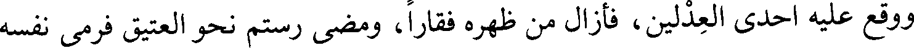
ووقع عليه احدى العدلين، فأزال من ظهره فقارا، ومضى رستم نحو العتيق فرمى نفسه
File: 000129.gt.txt (if the image is defective, simply delete all Arabic text and the line will be excluded)

فيه، واقتحمه هلال فأخذ برجله ثم خرج به، فقتله ثم جاء به حتى رمى به بين أرجل
File: 000130.gt.txt (if the image is defective, simply delete all Arabic text and the line will be excluded)
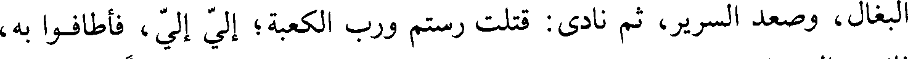
البغال، وصعد السرير، ثم نادى: قتلت رستم ورب الكعبة؛ إلي إلي، فأطافوا به،
File: 000131.gt.txt (if the image is defective, simply delete all Arabic text and the line will be excluded)

فانهزم المشركون وتهافتوا في العتيق، فقتل المسلمون منهم ثلاثين ألفا، وقتلوا في
File: 000132.gt.txt (if the image is defective, simply delete all Arabic text and the line will be excluded)

المعركة عشرة آلاف سوى من قتل قبل ذلك، وكان المسلم يدعو الكافر فيأتي إليه
File: 000134.gt.txt (if the image is defective, simply delete all Arabic text and the line will be excluded)

لما انهزمت(1)الروم يوم أجنادين انتهوا إلى موضع لا يعبره إلا إنسان إنسان، فجعلت
File: 000135.gt.txt (if the image is defective, simply delete all Arabic text and the line will be excluded)

الروم تقاتل عليه وقد تقدموه وعبروه، وتقدم هشام بن العاص بن وائل، فقاتلهم عليه حتى
File: 000136.gt.txt (if the image is defective, simply delete all Arabic text and the line will be excluded)
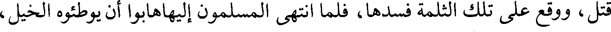
قتل، ووقع على تلك الثلمة فسدها، فلما انتهى المسلمون إليهاهابوا أن يوطئوه الخيل،
File: 000137.gt.txt (if the image is defective, simply delete all Arabic text and the line will be excluded)

فقال عمرو بن العاص: أيها الناس، إن الله قد استشهده ورفع روحه، وإنما هو جثة،
File: 000138.gt.txt (if the image is defective, simply delete all Arabic text and the line will be excluded)

فأوطئوه الخيل، ثم أوطأه هو وتبعه الناس حتى قطعوه، فلما انتهت الهزيمة ورجع
File: 000139.gt.txt (if the image is defective, simply delete all Arabic text and the line will be excluded)

المسلمون إلى العسكر، كر إليه عمرو بن العاص، فجعل يجمع لحمه وأعضاءه
File: 000140.gt.txt (if the image is defective, simply delete all Arabic text and the line will be excluded)
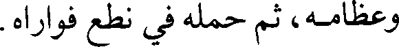
وعظامه، ثم حمله في نطع فواراه.
File: 000141.gt.txt (if the image is defective, simply delete all Arabic text and the line will be excluded)

وكانت وقعة أجنادين أول وقعة بين المسلمين والروم، وكانت في جمادى الأولى
File: 000142.gt.txt (if the image is defective, simply delete all Arabic text and the line will be excluded)

سنة ثلاث عشرة في خلافة أبي بكر رضي الله عنه، وكان على الناس يومئذ عمرو بن
File: 000143.gt.txt (if the image is defective, simply delete all Arabic text and the line will be excluded)

172-[واقد بن عبد الله بن عبد مناف بن عزيز(2) :
File: 000144.gt.txt (if the image is defective, simply delete all Arabic text and the line will be excluded)

أسلم قبل دخول رسول الله صلعم دار الأرقم، وشهد مع عبد الله بن جحش سريته
File: 000145.gt.txt (if the image is defective, simply delete all Arabic text and the line will be excluded)

إلى نخلة، وقتل يومئذ عمرو بن الحضرمي. وشهد بدرا والمشاهد كلها مع رسول
File: 000146.gt.txt (if the image is defective, simply delete all Arabic text and the line will be excluded)

الله صلعم، وليس له عقب](3).
File: 000147.gt.txt (if the image is defective, simply delete all Arabic text and the line will be excluded)

173
File: 000148.gt.txt (if the image is defective, simply delete all Arabic text and the line will be excluded)

طلعت نواصي الخيل من قبل الشام - وكان فتح دمشق قبل القادسية بشهر - وذلك أنه قدم
File: 000149.gt.txt (if the image is defective, simply delete all Arabic text and the line will be excluded)
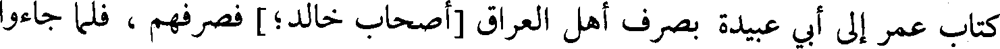
كتاب عمر إلى أبي عبيدة بصرف أهل العراق [أصحاب خالد؛] فصرفهم، فلما جاءوا
File: 000150.gt.txt (if the image is defective, simply delete all Arabic text and the line will be excluded)

سمي هذا اليوم يوم أغواث، وأكثر المسلمون القتل في الأعاجم، ولم تقاتل الأعاجم
File: 000151.gt.txt (if the image is defective, simply delete all Arabic text and the line will be excluded)

يومئذ على فيل، لأن أنيابها(1) كانت قد تكسرت، وحمل المسلمون رجالا على إبل قد
File: 000152.gt.txt (if the image is defective, simply delete all Arabic text and the line will be excluded)

ألبسوها، فهي مجللة مبرقعة يتشبهون بالفيلة، فلقي أهل فارس يوم أغواث أعظم مما
File: 000153.gt.txt (if the image is defective, simply delete all Arabic text and the line will be excluded)

لقي المسلمون من الفيلة يوم أرماث، وجعل رجل من المسلمين يقال له: سواد يتعرض
File: 000154.gt.txt (if the image is defective, simply delete all Arabic text and the line will be excluded)

بالشهادة فأبطأت عليه، فتعرض لرستم يريده، فقتل دونه، وحمل القعقاع بن عمر يومئذ
File: 000155.gt.txt (if the image is defective, simply delete all Arabic text and the line will be excluded)
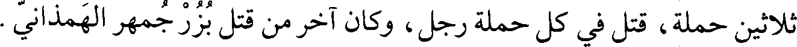
ثلاثين حملة، قتل في كل حملة رجل، وكان آخر من قتل بزرجمهر الهمذاني.
File: 000156.gt.txt (if the image is defective, simply delete all Arabic text and the line will be excluded)

وروى مجالد(2)، عن الشعبي، قال: كانت امرأة من النخع لها بنون أربعة شهدوا
File: 000157.gt.txt (if the image is defective, simply delete all Arabic text and the line will be excluded)

القادسية، فقالت لبنيها:إنكم أسلمتم فلم تبدلوا،وهاجرتم فلم تثوبوا،(3)ولم تنب بكم
File: 000158.gt.txt (if the image is defective, simply delete all Arabic text and the line will be excluded)

البلاد، ولم تقحمكم السنة، ثم جئتم بأمكم عجوز كبيرة فوضعتموها بين يدي أهل
File: 000159.gt.txt (if the image is defective, simply delete all Arabic text and the line will be excluded)

فارس؛ والله إنكم لبنو رجل واحد، كما أنكم بنو امرأة واحدة، ما خنت أباكم، ولا
File: 000160.gt.txt (if the image is defective, simply delete all Arabic text and the line will be excluded)

فضحت خالكم، إنطلقوا فاشهدوا أول القتال وآخره، فاقبلوا يشتدون؛ فلما غابوا عنها
File: 000161.gt.txt (if the image is defective, simply delete all Arabic text and the line will be excluded)

رفعت يديها قبل السماء وقالت:اللهم ادفع عن بني، فرجعوا إليها وقد أحسنوا /
File: 000162.gt.txt (if the image is defective, simply delete all Arabic text and the line will be excluded)

القتال، ما كلم منهم رجل [كلما](4)، فرأيتهم بعد ذلك يأخذون ألفا ألفا من العطاء(5)، 66/أ
File: 000163.gt.txt (if the image is defective, simply delete all Arabic text and the line will be excluded)
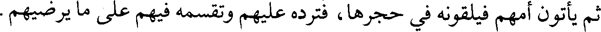
ثم يأتون أمهم فيلقونه في حجرها، فترده عليهم وتقسمه فيهم على ما يرضيهم.
File: 000164.gt.txt (if the image is defective, simply delete all Arabic text and the line will be excluded)

وقد رويت لنا هذه الحكاية أتم من هذا.
File: 000165.gt.txt (if the image is defective, simply delete all Arabic text and the line will be excluded)

أحمد، قال: أخبرنا أحمد بن علي الثوري، قال: أخبرنا محمد بن عبد الله الدقاق، قال:
File: 000166.gt.txt (if the image is defective, simply delete all Arabic text and the line will be excluded)
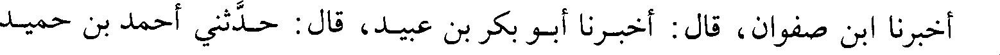
أخبرنا ابن صفوان، قال: أخبرنا أبو بكر بن عبيد، قال: حدثني أحمد بن حميد
File: 000167.gt.txt (if the image is defective, simply delete all Arabic text and the line will be excluded)

189
File: 000169.gt.txt (if the image is defective, simply delete all Arabic text and the line will be excluded)

182 - أم عمارة؛ واسمها نسيبة، بفتح النون وكسر السين، بنت كعب بن عمرو بن
File: 000170.gt.txt (if the image is defective, simply delete all Arabic text and the line will be excluded)

عوف الأنصارية: (1)
File: 000171.gt.txt (if the image is defective, simply delete all Arabic text and the line will be excluded)

أسلمت وحضرت العقبة، وبايعت وشهدت / أحدا والحديبية وخيبر وحنينا وعمرة 72/أ
File: 000172.gt.txt (if the image is defective, simply delete all Arabic text and the line will be excluded)

القضاء ويوم اليمامة.
File: 000173.gt.txt (if the image is defective, simply delete all Arabic text and the line will be excluded)

وروى عمر بن الخطاب رضي الله عنه، عن النبي صلعم، أنه قال: «ما التفت يوم
File: 000174.gt.txt (if the image is defective, simply delete all Arabic text and the line will be excluded)

أحد يمينا وشمالا إلا وأراها تقاتل دوني».
File: 000175.gt.txt (if the image is defective, simply delete all Arabic text and the line will be excluded)

قال الواقدي: قاتلت يوم أحد، وجرحت اثنتي عشرة جراحة، وداوت جرحا في
File: 000177.gt.txt (if the image is defective, simply delete all Arabic text and the line will be excluded)

استطاعت من نزف الدم، وخرجت مع المسلمين في قتال أهل الردة، فباشرت الحرب
File: 000178.gt.txt (if the image is defective, simply delete all Arabic text and the line will be excluded)

بنفسها حتى قتل الله مسيلمة، ورجعت وبها عشر جراحات من طعنة وضربة(3).
File: 000179.gt.txt (if the image is defective, simply delete all Arabic text and the line will be excluded)
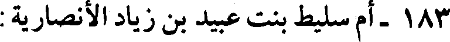
183- أم سليط بنت عبيد بن زياد الأنصارية :
File: 000180.gt.txt (if the image is defective, simply delete all Arabic text and the line will be excluded)
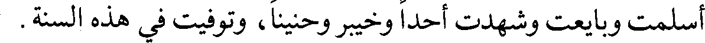
أسلمت وبايعت وشهدت أحدا وخيبر وحنينا، وتوفيت في هذه السنة.
File: 000181.gt.txt (if the image is defective, simply delete all Arabic text and the line will be excluded)

البخاري، حدثنا يحيى بن بكير، حدثنا الليث، عن ابن شهاب قال: قال](4) ثعلبة بن
File: 000182.gt.txt (if the image is defective, simply delete all Arabic text and the line will be excluded)

أبي مالك:
File: 000183.gt.txt (if the image is defective, simply delete all Arabic text and the line will be excluded)
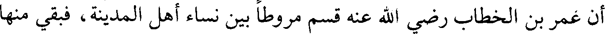
أن عمر بن الخطاب رضي الله عنه قسم مروطا بين نساء أهل المدينة، فبقي منها
File: 000184.gt.txt (if the image is defective, simply delete all Arabic text and the line will be excluded)

مرط جيد، فقال له بعض من عنده: يا أمير المؤمنين، اعط هذا ابنة رسول الله صلعم التي
File: 000185.gt.txt (if the image is defective, simply delete all Arabic text and the line will be excluded)
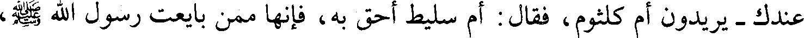
عندك - يريدون أم كلثوم، فقال: أم سليط أحق به، فإنها ممن بايعت رسول الله صلعم،
File: 000186.gt.txt (if the image is defective, simply delete all Arabic text and the line will be excluded)

ثم دخلت
File: 000187.gt.txt (if the image is defective, simply delete all Arabic text and the line will be excluded)

سنة أربع عشرة(1)
File: 000188.gt.txt (if the image is defective, simply delete all Arabic text and the line will be excluded)

160
File: 000189.gt.txt (if the image is defective, simply delete all Arabic text and the line will be excluded)

فمن الحوادث فيها قصة القادسية(2)
File: 000190.gt.txt (if the image is defective, simply delete all Arabic text and the line will be excluded)
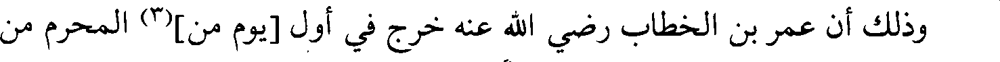
وذلك أن عمر بن الخطاب رضي الله عنه خرج في أول [يوم من](3) المحرم من
File: 000191.gt.txt (if the image is defective, simply delete all Arabic text and the line will be excluded)

سنة أربع عشرة، فنزل على ماء يدعى صرارا، فعسكر به ولا يدري الناس ما يريد، أيسير
File: 000192.gt.txt (if the image is defective, simply delete all Arabic text and the line will be excluded)

أم يقيم؟ وكانوا إذا أرادوا أن يسألوه عن شيء رموه بعثمان أو بعبد الرحمن بن عوف،
File: 000193.gt.txt (if the image is defective, simply delete all Arabic text and the line will be excluded)
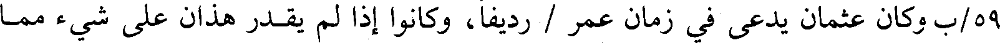
59/ب وكان عثمان يدعى في زمان عمر / رديفا، وكانوا إذا لم يقدر هذان على شيء مما
File: 000194.gt.txt (if the image is defective, simply delete all Arabic text and the line will be excluded)
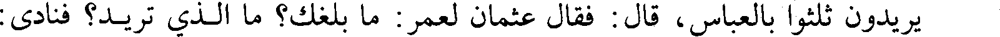
يريدون ثلثوا بالعباس، قال: فقال عثمان لعمر: ما بلغك؟ ما الذي تريد؟ فنادى:
File: 000195.gt.txt (if the image is defective, simply delete all Arabic text and the line will be excluded)

الصلاة جامعة، فاجتمع الناس، فأخبرهم الخبر الذي اقتصصناه في ذكر ما هيج أمر
File: 000196.gt.txt (if the image is defective, simply delete all Arabic text and the line will be excluded)

القادسية من اجتماع الناس على يزدجرد، وقصد فارس إهلاك العرب فقال عامة الناس:
File: 000197.gt.txt (if the image is defective, simply delete all Arabic text and the line will be excluded)

سر وسر بنا، فقال: استعدوا فإني سائر إلا أن يجيء رأي هو أمثل من هذا.
File: 000198.gt.txt (if the image is defective, simply delete all Arabic text and the line will be excluded)

ثم بعث إلى أهل الرأي، فاجتمع [إليه] أصحاب رسول الله صلعم وأعلام العرب،
File: 000199.gt.txt (if the image is defective, simply delete all Arabic text and the line will be excluded)

فقال: أحضروني الرأي، فاجتمع ملؤهم على أن يبعث رجلا من أصحاب رسول
File: 000200.gt.txt (if the image is defective, simply delete all Arabic text and the line will be excluded)

الله صلعم ويقيم، ويرميه بالجنود، فإن كان الذي يشتهي من الفتح، فهو الذي يريد، وإلا
File: 000201.gt.txt (if the image is defective, simply delete all Arabic text and the line will be excluded)

أعاد رجلا وندب جندا آخر.
File: 000202.gt.txt (if the image is defective, simply delete all Arabic text and the line will be excluded)

فأرسل إلى علي رضي الله عنه، وكان قد استخلفه على المدينة، وإلى طلحة،
File: 000203.gt.txt (if the image is defective, simply delete all Arabic text and the line will be excluded)

وكان قد بعثه على المقدمة، وجعل على المجنبتين الزبير وعبد الرحمن بن عوف، فقال
File: 000204.gt.txt (if the image is defective, simply delete all Arabic text and the line will be excluded)

فيقتله، وثبت جماعة من / المشركين استحياء من الفرار، فقتلهم المسلمون. 67/ب
File: 000205.gt.txt (if the image is defective, simply delete all Arabic text and the line will be excluded)

وقتل ليلة الهرير ويوم القادسية من المسلمين ستة آلاف(1).
File: 000206.gt.txt (if the image is defective, simply delete all Arabic text and the line will be excluded)

ولما انهزموا(2) أمر سعد زهرة بن الحوية باتباعهم، فتبعهم والجالنوس يحميهم،
File: 000207.gt.txt (if the image is defective, simply delete all Arabic text and the line will be excluded)

فقتله زهرة وقتل خلقا كثيرا منهم، ثم رجع بأصحابه فبات بالقادسية، واستكثر سعد
File: 000208.gt.txt (if the image is defective, simply delete all Arabic text and the line will be excluded)

سلب الجالنوس، فكتب إلى عمر، فكتب إليه : إني قد نفلت من قتل رجلا سلبه،
File: 000209.gt.txt (if the image is defective, simply delete all Arabic text and the line will be excluded)

فأعطاه إياه، فباعه بسبعين ألفا، وجمع من الأسلاب والأموال ما لم يجمع مثله.
File: 000210.gt.txt (if the image is defective, simply delete all Arabic text and the line will be excluded)
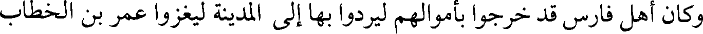
وكان أهل فارس قد خرجوا بأموالهم ليردوا بها إلى المدينة ليغزوا عمر بن الخطاب
File: 000211.gt.txt (if the image is defective, simply delete all Arabic text and the line will be excluded)

رضي الله عنه، فقضى الله بها للمسلمين. وكان مع رستم ستمائة ألف ألف، وأصاب
File: 000212.gt.txt (if the image is defective, simply delete all Arabic text and the line will be excluded)

صاحب الفرسين يومئذ سبعا وعشرين ألفا، ولم يعبأوا بالكافور لأنهم ما عرفوه، فباعوه
File: 000213.gt.txt (if the image is defective, simply delete all Arabic text and the line will be excluded)

من قوم مروا بهم كيلا من الكافور بكيل من الملح الطيب، وقالوا: ذاك ملح مر.
File: 000214.gt.txt (if the image is defective, simply delete all Arabic text and the line will be excluded)

قال: أخبرني أبو الحسن محمد بن عبد الواحد، قال: حدثنا أحمد بن إبراهيم، قال:
File: 000215.gt.txt (if the image is defective, simply delete all Arabic text and the line will be excluded)
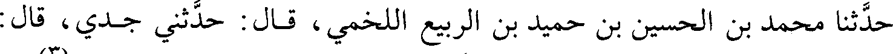
حدثنا محمد بن الحسين بن حميد بن الربيع اللخمي، قال: حدثني جدي، قال:
File: 000216.gt.txt (if the image is defective, simply delete all Arabic text and the line will be excluded)

حدثنا إبراهيم بن إسماعيل، قال: حدثنا حفص بن غياث، عن الأعمش](3) عن
File: 000217.gt.txt (if the image is defective, simply delete all Arabic text and the line will be excluded)

حبيب بن صهبان، قال:
File: 000218.gt.txt (if the image is defective, simply delete all Arabic text and the line will be excluded)

شهدت القادسية، قال: فانهزموا حتى أتوا المدائن، قال: وسبقناهم فانتهيناإليها
File: 000219.gt.txt (if the image is defective, simply delete all Arabic text and the line will be excluded)

وهي تطفح، فأقحم رجل منا فرسه وقرأ: (وما كان لنفس أن تموت إلا بإذن الله كتابا
File: 000220.gt.txt (if the image is defective, simply delete all Arabic text and the line will be excluded)

مؤجلا)(4). قال: فعبر ثم تبعوه الناس أجمعون، فعبروا فما فقدوا عقالا ما خلا رجلا
File: 000221.gt.txt (if the image is defective, simply delete all Arabic text and the line will be excluded)

منهم انقطع منه قدح كان معلقا بسرجه، فرأيته يدور في الماء. قال: فلما رأونا انهزموا
File: 000222.gt.txt (if the image is defective, simply delete all Arabic text and the line will be excluded)

من غير قتال. قال : فبلغ سهم الرجل ثلاث عشرة دابة، وأصابوا من الجامات الذهب
File: 000223.gt.txt (if the image is defective, simply delete all Arabic text and the line will be excluded)
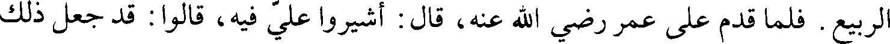
الربيع. فلما قدم على عمر رضي الله عنه، قال: أشيروا علي فيه، قالوا: قد جعل ذلك
File: 000224.gt.txt (if the image is defective, simply delete all Arabic text and the line will be excluded)

80/ب لك فر رأيك / ،إلا ما كان من علي رضي الله عنه، فإنه قال: يا أمير المؤمنين، الأمر كما
File: 000225.gt.txt (if the image is defective, simply delete all Arabic text and the line will be excluded)

قالوا: ولم يبق إلا التروية؛ إنك إن تقبله على هذا اليوم لم تعدم في غد من يستحق به ما
File: 000226.gt.txt (if the image is defective, simply delete all Arabic text and the line will be excluded)

ليس له، فقال: صدقتني، فقطعه بينهم.
File: 000227.gt.txt (if the image is defective, simply delete all Arabic text and the line will be excluded)
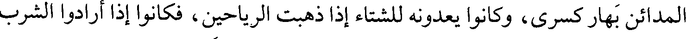
المدائن بهار كسرى، وكانوا يعدونه للشتاء إذا ذهبت الرياحين، فكانوا إذا أرادوا الشرب
File: 000228.gt.txt (if the image is defective, simply delete all Arabic text and the line will be excluded)

شربوا عليه، فكأنهم في رياض وكان بساط واحد ستين ذراعا في ستين، أرضه مذهب،
File: 000229.gt.txt (if the image is defective, simply delete all Arabic text and the line will be excluded)

ووشيه بفصوص، ومموه بجوهر، وورقه بحرير وماؤه ذهب،وكانت العرب تسميه القطف،
File: 000230.gt.txt (if the image is defective, simply delete all Arabic text and the line will be excluded)

فلما قسم سعد فيهم فضل عنهم ولم يتفق قسمه، فجمع سعد المسلمين، فقال : إن
File: 000231.gt.txt (if the image is defective, simply delete all Arabic text and the line will be excluded)

الله تعالى قد ملأ أيديكم وقد عسر قسم هذا البساط،ولا يقوى على شرائه أحد، فأرى
File: 000232.gt.txt (if the image is defective, simply delete all Arabic text and the line will be excluded)

أن تطيبوا به أنفسنا لأمير المؤمنين يضعه حيث شاء، ففعلوا.
File: 000233.gt.txt (if the image is defective, simply delete all Arabic text and the line will be excluded)

فلما قدم على عمر المدينة جمع الناس فاستشارهم في البساط، فمن بين مشير
File: 000234.gt.txt (if the image is defective, simply delete all Arabic text and the line will be excluded)

بقبضه، وآخر مفوض إليه، وآخر مرقق، فقام علي رضي الله عنه، فقال : لم تجعل
File: 000235.gt.txt (if the image is defective, simply delete all Arabic text and the line will be excluded)

علمك جهلا، ويقينك شكا، إنه ليس لك من الدنيا إلا ما أعطيت فأمضيت، أو لبست
File: 000236.gt.txt (if the image is defective, simply delete all Arabic text and the line will be excluded)

فأبليت، أو أكلت فأفنيت، فقال : صدقتني ، فقطعه فقسمه بين الناس، فأصاب عليا
File: 000237.gt.txt (if the image is defective, simply delete all Arabic text and the line will be excluded)
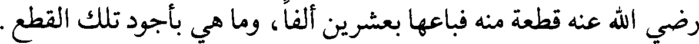
رضي الله عنه قطعة منه فباعها بعشرين ألفا، وما هي بأجود تلك القطع.
File: 000238.gt.txt (if the image is defective, simply delete all Arabic text and the line will be excluded)

أخبرنا الحسين بن القاسم الكوكبي ، قال : حدثنا أبو العباس المبرد، قال: أخبرني]
File: 000239.gt.txt (if the image is defective, simply delete all Arabic text and the line will be excluded)

القاسم بن سهل النوشجاني:
File: 000240.gt.txt (if the image is defective, simply delete all Arabic text and the line will be excluded)

إن ستر باب الإيوان أخرقه المسلمون لما افتتحوا المدائن فأخرجوا منه ألف ألف
File: 000241.gt.txt (if the image is defective, simply delete all Arabic text and the line will be excluded)

مثقال ذهبا، فبيع المثقال بعشرة دراهم، فبلغ عشرة آلاف ألف [ألف](3) درهم.
File: 000242.gt.txt (if the image is defective, simply delete all Arabic text and the line will be excluded)
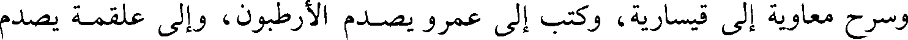
وسرح معاوية إلى قيسارية، وكتب إلى عمرو يصدم الأرطبون، وإلى علقمة يصدم
File: 000243.gt.txt (if the image is defective, simply delete all Arabic text and the line will be excluded)

فسار(1) معاوية إلى قيسارية، فهزم أهلها وحصرهم فيها، فجعلوا كلما خرجوا إليه
File: 000244.gt.txt (if the image is defective, simply delete all Arabic text and the line will be excluded)

هزمهم وردهم إلى حصنهم، ثم قاتلوا فبلغت قتلاهم ثمانين ألفا، وكملت في هزيمتهم
File: 000245.gt.txt (if the image is defective, simply delete all Arabic text and the line will be excluded)

بمائة ألف . وانطلق علقمة، فحصر الفيقار بغزة، وصمد عمرو إلى الأرطبون ومن
File: 000246.gt.txt (if the image is defective, simply delete all Arabic text and the line will be excluded)
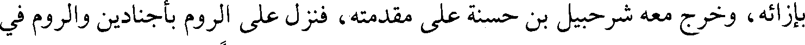
بإزائه، وخرج معه شرحبيل بن حسنة على مقدمته، فنزل على الروم بأجنادين والروم في
File: 000247.gt.txt (if the image is defective, simply delete all Arabic text and the line will be excluded)

حصونهم، وعليهم الأرطبون، وكان أدهى الروم وأبعدهم غورا، وكان قد وضع بالرملة
File: 000248.gt.txt (if the image is defective, simply delete all Arabic text and the line will be excluded)

جندا عظيما، وبإيلياء جندا عظيما، فأقام عمرو على أجنادين لا يقدر من الأرطبون على
File: 000249.gt.txt (if the image is defective, simply delete all Arabic text and the line will be excluded)

شيء، فوليه بنفسه ودخل عليه كأنه رسول، فأبلغه ما يريد، وسمع كلامه، وتأمل
File: 000250.gt.txt (if the image is defective, simply delete all Arabic text and the line will be excluded)

حصنه، فقال الأرطبون في نفسه : هذا عمرو، ثم دعا حرسيا، فقال : أخرج، فأقم مكان
File: 000251.gt.txt (if the image is defective, simply delete all Arabic text and the line will be excluded)

كذا وكذا، فإذا مر بك فاقتله، وفطن له عمرو، فقال : قد سمعت مني وسمعت منك،
File: 000252.gt.txt (if the image is defective, simply delete all Arabic text and the line will be excluded)

وأنا واحد من عشرة بعثنا عمر مع هذا الوالي ، فأرجع فآتيك بهم، فإن رأوا في الذي
File: 000253.gt.txt (if the image is defective, simply delete all Arabic text and the line will be excluded)

عرضت مثل الذي أرى، وإلا رددتم إلى مأمنهم. فقال : نعم، ثم قال لرجل كان هناك:
File: 000254.gt.txt (if the image is defective, simply delete all Arabic text and the line will be excluded)

إذهب إلى فلان فرده إلي ، ثم بان له أن عمرو قد خدعه ، فبلغ الخبر إلى عمر، فقال: لله در
File: 000255.gt.txt (if the image is defective, simply delete all Arabic text and the line will be excluded)

عمرو، ثم التقوا بأجنادين، فاقتتلوا قتالا شديدا حتى كثرت القتلى بينهم، وانهزم
File: 000256.gt.txt (if the image is defective, simply delete all Arabic text and the line will be excluded)

أرطبون، فأوى إلى إيلياء، ونزل عمرو بأجنادين، فكتب إليه أرطبون : والله لا تفتح من
File: 000257.gt.txt (if the image is defective, simply delete all Arabic text and the line will be excluded)

فلسطين شيئا بعد أجنادين، فارجع لا تغن(2)، وإنما صاحب الفتح رجل إسمه على
File: 000258.gt.txt (if the image is defective, simply delete all Arabic text and the line will be excluded)

ثلاثة أحرف، فعلم عمرو أنه عمر، فكتب إلى عمر يعلمه أن الفتح مدخر له، فنادى له
File: 000259.gt.txt (if the image is defective, simply delete all Arabic text and the line will be excluded)

73/ب الناس، واستخلف علي بن أبي طالب، فقال له علي : أين تخرج بنفسك؟ / فقال : أبادر
File: 000260.gt.txt (if the image is defective, simply delete all Arabic text and the line will be excluded)

لجهاد العدو موت العباس ؛ إنكم لو قد فقدتم العباس لانتقض بكم الشر كما ينتقض
File: 000261.gt.txt (if the image is defective, simply delete all Arabic text and the line will be excluded)

فمات العباس لست خلون من إمارة عثمان، وانتقض بالناس الشر.
File: 000262.gt.txt (if the image is defective, simply delete all Arabic text and the line will be excluded)

168
File: 000263.gt.txt (if the image is defective, simply delete all Arabic text and the line will be excluded)

ورمحه معلوب(1) بقد، معه حجفة(2) من جلود البقر، فجاء حتى جلس على الأرض،
File: 000264.gt.txt (if the image is defective, simply delete all Arabic text and the line will be excluded)

وقال: إنا لا نستحب القعود على زينتكم ، فكلمه وقال : ما جاء بكم؟ قال : الله جاء بنا
File: 000265.gt.txt (if the image is defective, simply delete all Arabic text and the line will be excluded)

63/ب لنخرج من شاء من عبادة العباد إلى عبادة / الله، من جور الأديان إلى عدل الإسلام،
File: 000266.gt.txt (if the image is defective, simply delete all Arabic text and the line will be excluded)

فمن قبل ذلك قبلنا منه، ومن أبى قاتلناه حتى نفضي إلى موعود الله. قال : وما [هو] موعود
File: 000267.gt.txt (if the image is defective, simply delete all Arabic text and the line will be excluded)

الله؟ قال : الجنة لمن مات على قتال من أبى، والظفر لمن بقي.
File: 000268.gt.txt (if the image is defective, simply delete all Arabic text and the line will be excluded)

فقال رستم(3): هل لكم أن تؤخروا هذا الأمر لننظر فيه وتنظروا، قال : إنا لا نؤجل
File: 000269.gt.txt (if the image is defective, simply delete all Arabic text and the line will be excluded)

أكثر من ثلاث.
File: 000270.gt.txt (if the image is defective, simply delete all Arabic text and the line will be excluded)

فخلص(4) رستم برؤساء أهل فارس، وقال : ما ترون، هل رأيتم قط كلاما أوضح
File: 000271.gt.txt (if the image is defective, simply delete all Arabic text and the line will be excluded)

وأعز من كلام هذا؟ قالوا : معاذ الله أن تميل إلى شيء من هذا وتدع دينك لهذا الكلب،
File: 000272.gt.txt (if the image is defective, simply delete all Arabic text and the line will be excluded)

أما ترى إلى ثيابه، فقال : ويحكم لا تنظرون إلى الثياب، ولكن انظروا إلى الرأي
File: 000273.gt.txt (if the image is defective, simply delete all Arabic text and the line will be excluded)

والكلام والسيرة، إن العرب تستخف باللباس والمأكل ويصونون الأحساب.
File: 000274.gt.txt (if the image is defective, simply delete all Arabic text and the line will be excluded)

فرجع ربعي(5) إلى أن ينظروا في الأجل، فلما كان في الغد بعثوا : [أن] ابعث إلينا
File: 000275.gt.txt (if the image is defective, simply delete all Arabic text and the line will be excluded)

ذلك الرجل، فبعث إليهم سعد حذيفة بن محصن، فلما جاء الى البساط قالوا : انزل،
File: 000276.gt.txt (if the image is defective, simply delete all Arabic text and the line will be excluded)

قال : ذاك لو جئتكم في حاجتي(6)، الحاجة لكم لا لي، فجاء حتى وقف ورستم على
File: 000277.gt.txt (if the image is defective, simply delete all Arabic text and the line will be excluded)

سريره، فقال له : انزل، قال : لا أفعل، فقال : ما بالك ولم يجئ صاحبنا بالأمس؟
File: 000278.gt.txt (if the image is defective, simply delete all Arabic text and the line will be excluded)

قال : أميرنا يحب أن يعدل بيننا في الشدة والرخاء، وهذه نوبتي، فتكلم بنحو ما تكلم به
File: 000279.gt.txt (if the image is defective, simply delete all Arabic text and the line will be excluded)

ربعي، ورجع.
File: 000280.gt.txt (if the image is defective, simply delete all Arabic text and the line will be excluded)

فلما كان(7) من الغد أرسلوا : ابعث لنا رجلا، فبعث اليهم المغيرة بن شعبة،
File: 000281.gt.txt (if the image is defective, simply delete all Arabic text and the line will be excluded)

وقام كل واحد(1) بنحو هذا الكلام، وتواثق الناس وتعاهدوا، وفعل أهل فارس
File: 000282.gt.txt (if the image is defective, simply delete all Arabic text and the line will be excluded)

وقال سعد : الزموا مواقفكم، لا تحركوا شيئا حتى تصلوا الظهر، فإذا صليتم
File: 000283.gt.txt (if the image is defective, simply delete all Arabic text and the line will be excluded)

الظهر فإني مكبر تكبيرة، فكبروا واستعدوا، واعلموا أن التكبير لم يعطه أحد قبلكم،
File: 000284.gt.txt (if the image is defective, simply delete all Arabic text and the line will be excluded)

وإنما أعطيتموه تأييدا [لكم]. ثم إذا سمعتم الثانية فكبروا، ولتستتم عدتكم، ثم إذا كبرت
File: 000285.gt.txt (if the image is defective, simply delete all Arabic text and the line will be excluded)

الثالثة فكبروا، ولينشط فرسانكم الناس ليبرزوا وليطاردوا، فإذا كبرت الرابعة فارجفوا
File: 000286.gt.txt (if the image is defective, simply delete all Arabic text and the line will be excluded)

جميعا حتى تخالطوا عدوكم، وقولوا: لا حول ولا قوة إلا بالله.
File: 000287.gt.txt (if the image is defective, simply delete all Arabic text and the line will be excluded)

فلما كبر(2) ثلاث مرات خرج غالب بن عبد الله الأسدي، فبرز إليه هرمز، فأسره
File: 000288.gt.txt (if the image is defective, simply delete all Arabic text and the line will be excluded)

غالب، وجاء به إلى سعد، وخرج طليحة إلى عظيم منهم فقتله، وقام بنو أسد فبالغوا في
File: 000289.gt.txt (if the image is defective, simply delete all Arabic text and the line will be excluded)

جهاد الفيلة ودفعها، فكبر سعد الرابعة فزحف إليهم المسلمون، وحملت الفيلة على
File: 000290.gt.txt (if the image is defective, simply delete all Arabic text and the line will be excluded)

الميمنة، والميسرة على الخيول.
File: 000291.gt.txt (if the image is defective, simply delete all Arabic text and the line will be excluded)

65/ب وأقبل أصحاب / عاصم على الفيلة، فقطعوا خراطيمها(4)، فارتفع عواؤها(5)،
File: 000292.gt.txt (if the image is defective, simply delete all Arabic text and the line will be excluded)

واقتتلوا حتى غربت الشمس، وحتى ذهب هدة من الليل، ثم تراجعوا، وأصيب في تلك
File: 000293.gt.txt (if the image is defective, simply delete all Arabic text and the line will be excluded)

العشية خمسمائة رجل، وهذا يومها الأول، وهو يوم أرماث.
File: 000294.gt.txt (if the image is defective, simply delete all Arabic text and the line will be excluded)

[يوم أغواث](6)
File: 000295.gt.txt (if the image is defective, simply delete all Arabic text and the line will be excluded)

ثم أصبح القوم من الغد على تعبية وقد وكل سعد رجالا بنقل الشهداء إلى
File: 000296.gt.txt (if the image is defective, simply delete all Arabic text and the line will be excluded)

العذيب، وأسلم الرثيث(7) إلى النساء يقمن عليهم، ودفن الشهداء(8)،فبينا هم كذلك إذ
File: 000297.gt.txt (if the image is defective, simply delete all Arabic text and the line will be excluded)

197
File: 000299.gt.txt (if the image is defective, simply delete all Arabic text and the line will be excluded)

جمع عمر الناس بالمدينة حتى انتهى إليه فتح القادسية ودمشق، فقال: إني كنت
File: 000300.gt.txt (if the image is defective, simply delete all Arabic text and the line will be excluded)

امرأ تاجرا يغني الله عز وجل عيالي بتجارتي، وقد شغلتموني بأمركم هذا، فماذا ترون
File: 000301.gt.txt (if the image is defective, simply delete all Arabic text and the line will be excluded)

أنه يحل لي من هذا المال؟ فأكثر القوم وعلي رضي الله عنه ساكت، فقال : يا علي، ما
File: 000302.gt.txt (if the image is defective, simply delete all Arabic text and the line will be excluded)

تقول؟ فقال : ما أصلحك وأصلح عيالك بالمعروف، ليس لك من الأمر غيره، فقال :
File: 000303.gt.txt (if the image is defective, simply delete all Arabic text and the line will be excluded)

القول(1) ما قال علي بن أبي طالب(2).
File: 000304.gt.txt (if the image is defective, simply delete all Arabic text and the line will be excluded)

و [عن سيف، عن مبشر بن الفضيل](3)، عن سالم بن عبد الله، قال(4):
File: 000305.gt.txt (if the image is defective, simply delete all Arabic text and the line will be excluded)

لما ولي عمر رضي الله عنه قعد على رزق أبي بكر رضي الله عنه الذي كانوا
File: 000306.gt.txt (if the image is defective, simply delete all Arabic text and the line will be excluded)

فرضوا له، فكان بذلك؛ فاشتدت حاجته، فاجتمع نفر من المهاجرين فيهم عثمان وعلي
File: 000307.gt.txt (if the image is defective, simply delete all Arabic text and the line will be excluded)

وطلحة والزبير، فقال الزبير : لو قلنا لعمر في زيادة نزيدها(5) إياه في رزقه، فقال علي :
File: 000308.gt.txt (if the image is defective, simply delete all Arabic text and the line will be excluded)

وددنا أنه فعل ذلك؛ فانطلقوا بنا، فقال عثمان : إنه عمر ، فهلموا فلنسترئ ما عنده
File: 000309.gt.txt (if the image is defective, simply delete all Arabic text and the line will be excluded)

من ورائه، نأتي حفصة فنكلمها(6) ونستكتمها أسماءنا ، فدخلوا / عليها وسألوها أن تخبر 75/ب
File: 000310.gt.txt (if the image is defective, simply delete all Arabic text and the line will be excluded)
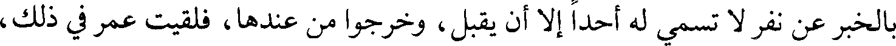
بالخبر عن نفر لا تسمي له أحدا إلا أن يقبل، وخرجوا من عندها، فلقيت عمر في ذلك،
File: 000311.gt.txt (if the image is defective, simply delete all Arabic text and the line will be excluded)

فعرفت الغضب في وجهه، فقال : من هؤلاء؟ قالت : لا سبيل إلى علمهم حتى أعلم ما
File: 000312.gt.txt (if the image is defective, simply delete all Arabic text and the line will be excluded)

رأيك، فقال : لو علمت من هم لسؤت وجوههم، أنت بيني وبينهم، أناشدك بالله ما
File: 000313.gt.txt (if the image is defective, simply delete all Arabic text and the line will be excluded)
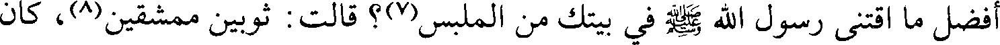
أفضل ما اقتنى رسول الله صلعم في بيتك من الملبس(7)؟ قالت : ثوبين ممشقين(8)، كان
File: 000314.gt.txt (if the image is defective, simply delete all Arabic text and the line will be excluded)

يلبسهما للوفد، ويخطب فيهما الجمع، قال : وأي طعام ناله من عندك أرفع؟ قالت :
File: 000315.gt.txt (if the image is defective, simply delete all Arabic text and the line will be excluded)
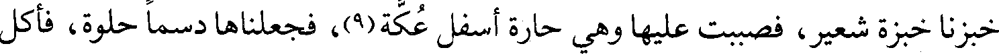
خبزنا خبزة شعير، فصببت عليها وهي حارة أسفل عكة(9)، فجعلناها دسما حلوة، فأكل
File: 000316.gt.txt (if the image is defective, simply delete all Arabic text and the line will be excluded)

منها. قال : وأي مبسط كان يبسطه عندك كان أوطأ؟ قالت : كساء لنا ثخين كنا نربعه في
File: 000318.gt.txt (if the image is defective, simply delete all Arabic text and the line will be excluded)

ثم نزل مما يلي الفرات، ودعا أهل الحيرة / ، فقال : فرحتم بدخول العرب. 62/أ
File: 000319.gt.txt (if the image is defective, simply delete all Arabic text and the line will be excluded)

بمجيئهم، وما هم على ديننا، وأما قولك : كنتم عونا لهم، فما يحوجهم إلى ذلك وقد
File: 000320.gt.txt (if the image is defective, simply delete all Arabic text and the line will be excluded)

بالأموال] عن أنفسنا.
File: 000321.gt.txt (if the image is defective, simply delete all Arabic text and the line will be excluded)

فارتحل رستم فنزل النجف، وكان بين خروجه من المدائن إلى أن لقي سعدا
File: 000322.gt.txt (if the image is defective, simply delete all Arabic text and the line will be excluded)

أربعة أشهر لا يقدم ولا يقاتل، رجاء أن يضجروا بمكانهم، وأن يجهدوا فينصرفوا، وكره
File: 000323.gt.txt (if the image is defective, simply delete all Arabic text and the line will be excluded)

قتالهم، فطاولهم والملك يستعجله، وعهد عمر إلى سعد والمسلمين أن ينزلوا على
File: 000324.gt.txt (if the image is defective, simply delete all Arabic text and the line will be excluded)

حدود أرضهم وأن يطاولهم، فنزلوا القادسية، وقد وطنوا أنفسهم على الصبر والمطاولة،
File: 000325.gt.txt (if the image is defective, simply delete all Arabic text and the line will be excluded)

فكانوا يغيرون على السواد، فانتسفوا ما حولهم وأعدوه للمطاولة.
File: 000326.gt.txt (if the image is defective, simply delete all Arabic text and the line will be excluded)

وكان عمر يمدهم، وقال بعض الناس لسعد : قد ضاف بنا المكان فأقدم، فزبره
File: 000327.gt.txt (if the image is defective, simply delete all Arabic text and the line will be excluded)

وقال : إذا كفيتم الرأي فلا تكلفوه، وخرج سواد وحميضة في مائة مائة؛ فأغاروا على النهرين،
File: 000328.gt.txt (if the image is defective, simply delete all Arabic text and the line will be excluded)

وقد كان سعد نهاهما أن يمعنا، وبلغ ذلك رستم، فبعث خيلا، فبعث سعد إليهم قوما
File: 000329.gt.txt (if the image is defective, simply delete all Arabic text and the line will be excluded)

فغنموا وسلموا.(1)
File: 000330.gt.txt (if the image is defective, simply delete all Arabic text and the line will be excluded)

ومضى طليحة حتى دخل عسكر رستم، وبات فيه يحرسه وينظر.
File: 000331.gt.txt (if the image is defective, simply delete all Arabic text and the line will be excluded)

فلما أدبر الليل أتى أفضل من توسم في ناحية العسكر، فإذا فرس لهم(1) لم ير
File: 000332.gt.txt (if the image is defective, simply delete all Arabic text and the line will be excluded)

في خيل القوم مثله، فانتضى سيفه فقطع مقود الفرس ثم ضمه إلى مقود فرسه ثم حرك
File: 000333.gt.txt (if the image is defective, simply delete all Arabic text and the line will be excluded)
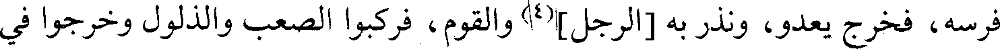
فرسه، فخرج يعدو، ونذر به [الرجل](4) والقوم، فركبوا الصعب والذلول وخرجوا في
File: 000334.gt.txt (if the image is defective, simply delete all Arabic text and the line will be excluded)

طلبه، فلحقه فارس، فعدل إليه طليحة فقصم ظهره بالرمح، ثم لحق به آخر، ففعل به
File: 000335.gt.txt (if the image is defective, simply delete all Arabic text and the line will be excluded)

مثل ذلك، ثم لحق به آخر فكر عليه طليحة ودعاه إلى الأسار / فاستأسر، فجاء به الى 62/ب
File: 000336.gt.txt (if the image is defective, simply delete all Arabic text and the line will be excluded)

سعد فأخبره الخبر، فقال للأسير : تكلم، فقال : قد باشرت الحروب وغشيتها،
File: 000337.gt.txt (if the image is defective, simply delete all Arabic text and the line will be excluded)

وسمعت بالأبطال ولقيتها، ما رأيت ولا سمعت بمثل هذا؛ أن رجلا قطع عسكرين لا
File: 000338.gt.txt (if the image is defective, simply delete all Arabic text and the line will be excluded)

أزوادكم، ثم سار حتى انتهى إلى الأنبار. وهذا المثنى هو أول من حارب الفرس في أيام
File: 000339.gt.txt (if the image is defective, simply delete all Arabic text and the line will be excluded)

ذكر ما هيج أمر القادسية(1)
File: 000340.gt.txt (if the image is defective, simply delete all Arabic text and the line will be excluded)
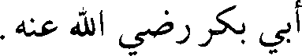
أبي بكر رضي الله عنه.
File: 000341.gt.txt (if the image is defective, simply delete all Arabic text and the line will be excluded)

اجتمع أهل فارس إلى رستم والفيرزان، فقالوا : قد وهنتما أهل فارس، وأطمعتما
File: 000342.gt.txt (if the image is defective, simply delete all Arabic text and the line will be excluded)

فيهم عدوهم، وما بعد بغداد وساباط وتكريت إلا المدائن، والله لتجتمعان أو لنبدأن
File: 000343.gt.txt (if the image is defective, simply delete all Arabic text and the line will be excluded)

بكما قبل أن يشمت بنا شامت.
File: 000344.gt.txt (if the image is defective, simply delete all Arabic text and the line will be excluded)

فقال رستم والفيرزان لبوران بنت كسرى: اكتبي لنا نساء كسرى وسراريه، ونساء
File: 000345.gt.txt (if the image is defective, simply delete all Arabic text and the line will be excluded)

آل كسرى وسراريهم . ففعلت، فأرسلوا في طلبهن، فاجتمعن فسألوهن عن ذكر من
File: 000346.gt.txt (if the image is defective, simply delete all Arabic text and the line will be excluded)

أبناء كسرى، فلم يوجد عندهن، فقال بعضهن : لم يبق إلا غلام يدعى يزدجرد من ولد
File: 000347.gt.txt (if the image is defective, simply delete all Arabic text and the line will be excluded)
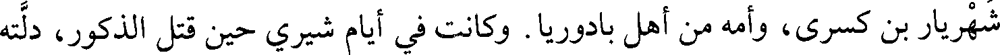
شهريار بن كسرى، وأمه من أهل بادوريا . وكانت في أيام شيري حين قتل الذكور، دلته
File: 000348.gt.txt (if the image is defective, simply delete all Arabic text and the line will be excluded)
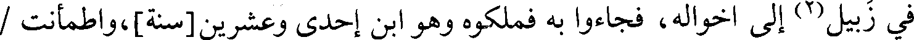
في زبيل(2) إلى أخواله، فجاءوا به فملكوه وهو ابن إحدى وعشرين [سنة]، واطمأنت /
File: 000349.gt.txt (if the image is defective, simply delete all Arabic text and the line will be excluded)

فارس واستوثقت، فكتب بذلك إلى عمر رضي الله عنه، فكتب عمر إلى عمال العرب 56/أ
File: 000350.gt.txt (if the image is defective, simply delete all Arabic text and the line will be excluded)

وذلك في ذي الحجة سنة ثلاث عشرة مخرجه إلى الحج ؛أن لا تدعوا أحدا له سلاح أو
File: 000351.gt.txt (if the image is defective, simply delete all Arabic text and the line will be excluded)

فرس أو نجدة أو رأي إلا انتخبتموه، ثم وجهتم إلي ، والعجل العجل.
File: 000352.gt.txt (if the image is defective, simply delete all Arabic text and the line will be excluded)

وحج بالناس(3) عامئذ عبد الرحمن بن عوف، وكان عامل عمر في هذه السنة
File: 000353.gt.txt (if the image is defective, simply delete all Arabic text and the line will be excluded)

على مكة عتاب بن أسيد، وعلى الطائف عثمان بن أبي العاص، وعلى اليمن يعلى بن
File: 000354.gt.txt (if the image is defective, simply delete all Arabic text and the line will be excluded)

أمية، وعلى عمان واليمامة حذيفة بن محصن، وعلى البحرين العلاء بن الحضرمي ،
File: 000355.gt.txt (if the image is defective, simply delete all Arabic text and the line will be excluded)

وعلى الشام أبو عبيدة، وعلى فرج الكوفة وما فتح من أرضها المثنى بن حارثة، وكان
File: 000356.gt.txt (if the image is defective, simply delete all Arabic text and the line will be excluded)

على القضاء علي بن أبي طالب.
File: 000357.gt.txt (if the image is defective, simply delete all Arabic text and the line will be excluded)

أن عمر [بن الخطاب رضي الله عنه] خرج ذات ليلة في رمضان ومعه
File: 000358.gt.txt (if the image is defective, simply delete all Arabic text and the line will be excluded)

عبد الرحمن بن عبد القاري، فرأى الناس يصلون متفرقين أوزاعا في المسجد، فقال
File: 000359.gt.txt (if the image is defective, simply delete all Arabic text and the line will be excluded)

عمر: لو جمعناهم على رجل واحد كان أمثل ، فجمعهم على أبي بن كعب، [ثم خرج
File: 000360.gt.txt (if the image is defective, simply delete all Arabic text and the line will be excluded)

وهم يصلون خلف أبي بن كعب جميعا](1)، فقال : نعمت البدعة والتي ينامون عنها
File: 000361.gt.txt (if the image is defective, simply delete all Arabic text and the line will be excluded)

أفضل ، وهي آخر الليل، وكتب بها إلى الأمصار.
File: 000362.gt.txt (if the image is defective, simply delete all Arabic text and the line will be excluded)

علي بن ثابت، أخبرنا عبد الرحمن بن محمد بن أحمد بن فضالة، حدثنا الفضل بن
File: 000363.gt.txt (if the image is defective, simply delete all Arabic text and the line will be excluded)
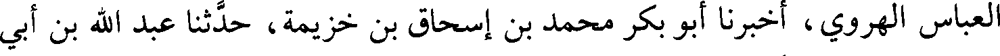
العباس الهروي، أخبرنا أبو بكر محمد بن إسحاق بن خزيمة، حدثنا عبد الله بن أبي
File: 000364.gt.txt (if the image is defective, simply delete all Arabic text and the line will be excluded)

زياد القطواني، حدثنا سنان بن جاثمة، حدثنا جعفر بن سليمان، حدثنا قطر يعني ابن
File: 000365.gt.txt (if the image is defective, simply delete all Arabic text and the line will be excluded)

كعب القطيعي ، عن أبي إسحاق الهمذاني](2)، قال :
File: 000366.gt.txt (if the image is defective, simply delete all Arabic text and the line will be excluded)

خرج علي بن أبي طالب في أول ليلة من شهر رمضان، فسمع القراءة في
File: 000367.gt.txt (if the image is defective, simply delete all Arabic text and the line will be excluded)

المساجد، ورأى القناديل تزهر، فقال : نور الله لعمر بن الخطاب قبره كما نور مساجد
File: 000368.gt.txt (if the image is defective, simply delete all Arabic text and the line will be excluded)

الله تعالى بالقرآن.
File: 000369.gt.txt (if the image is defective, simply delete all Arabic text and the line will be excluded)

وفي هذه السنة(3) اختط البصرة(4)
File: 000370.gt.txt (if the image is defective, simply delete all Arabic text and the line will be excluded)

وجه عمر بن الخطاب عتبة بن غزوان إلى البصرة، وأمره بنزولها بمن معه،
File: 000371.gt.txt (if the image is defective, simply delete all Arabic text and the line will be excluded)

وقيل : كان ذلك في سنة خمس عشرة، وكذلك دخول سعد الكوفة .
File: 000372.gt.txt (if the image is defective, simply delete all Arabic text and the line will be excluded)
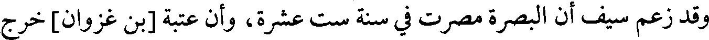
وقد زعم سيف أن البصرة مصرت في سنة ست عشرة، وأن عتبة [بن غزوان] خرج
File: 000373.gt.txt (if the image is defective, simply delete all Arabic text and the line will be excluded)

إلى البصرة من المدائن بعد فراغ سعد من جلولاء وتكريت، وجهه إليها سعد بأمر عمر.
File: 000374.gt.txt (if the image is defective, simply delete all Arabic text and the line will be excluded)

والأول أثبت، وعليه الجمهور.
File: 000375.gt.txt (if the image is defective, simply delete all Arabic text and the line will be excluded)

وفي هذه السنة
File: 000376.gt.txt (if the image is defective, simply delete all Arabic text and the line will be excluded)

ضرب عمر أبا محجن الثقفي سبع مرات في الخمر، وضرب معه ربيعة بن
File: 000377.gt.txt (if the image is defective, simply delete all Arabic text and the line will be excluded)

أمية بن خلف في شراب شربوه في ذلك، وضرب ابنه عبد الرحمن في ذلك(1).
File: 000378.gt.txt (if the image is defective, simply delete all Arabic text and the line will be excluded)

أخبرنا أحمد بن محمد بن رزق، والحسن بن أبي بكر قالا : أخبرنا محمد بن عبد الله
File: 000379.gt.txt (if the image is defective, simply delete all Arabic text and the line will be excluded)

أبو عبد الله الهروي، حدثنا علي بن محمد بن عيسى الحكاني، حدثنا أبو اليمان،
File: 000380.gt.txt (if the image is defective, simply delete all Arabic text and the line will be excluded)

أخبرنا شعيب عن الزهري، قال : أخبرني سالم بن عبد الله](2)، أن عبد الله بن عمر
File: 000381.gt.txt (if the image is defective, simply delete all Arabic text and the line will be excluded)

شرب عبد الرحمن بن عمر، وشرب معه أبو سروعة عقبة بن الحارث، ونحن
File: 000382.gt.txt (if the image is defective, simply delete all Arabic text and the line will be excluded)

بمصر في خلافة عمر بن الخطاب، فسكرا، فلما أصبحوا انطلقا إلى عمرو بن العاص
File: 000383.gt.txt (if the image is defective, simply delete all Arabic text and the line will be excluded)

وهو أمير مصر، فقالا : أطهرنا فإنا قد سكرنا من شراب شربناه.
File: 000384.gt.txt (if the image is defective, simply delete all Arabic text and the line will be excluded)

70/ب قال عبد الله بن عمر: / ولم أشعر أنهما أتيا عمرو بن العاص. قال : فذكروا أخي
File: 000385.gt.txt (if the image is defective, simply delete all Arabic text and the line will be excluded)
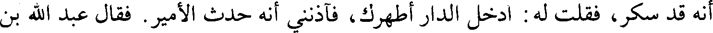
أنه قد سكر، فقلت له : ادخل الدار أطهرك، فآذنني أنه حدث الأمير. فقال عبد الله بن
File: 000386.gt.txt (if the image is defective, simply delete all Arabic text and the line will be excluded)

عمر: فقلت : والله لا يحلق اليوم على رؤوس الناس، ادخل أحلقك - وكانوا إذ ذاك
File: 000387.gt.txt (if the image is defective, simply delete all Arabic text and the line will be excluded)

يحلقون مع الحد، فدخل معي الدار، فحلقت أخي بيدي ، ثم جلدهما عمرو بن
File: 000388.gt.txt (if the image is defective, simply delete all Arabic text and the line will be excluded)

العاص فسمع عمر بن الخطاب بذلك، فكتب إلى عمرو: أن ابعث إلي بعبد
File: 000389.gt.txt (if the image is defective, simply delete all Arabic text and the line will be excluded)

الرحمن بن عمر على قتب، ففعل ذلك عمرو، فلما قدم عبد الرحمن على عمر جلده
File: 000390.gt.txt (if the image is defective, simply delete all Arabic text and the line will be excluded)
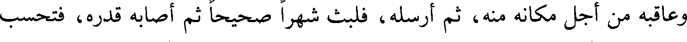
وعاقبه من أجل مكانه منه، ثم أرسله، فلبث شهرا صحيحا ثم أصابه قدره، فتحسب
File: 000391.gt.txt (if the image is defective, simply delete all Arabic text and the line will be excluded)

عامة الناس أنه مات من جلد عمر؛ ولم يمت من جلده.
File: 000392.gt.txt (if the image is defective, simply delete all Arabic text and the line will be excluded)

قال المؤلف(3). ولا ينبغي أن يظن بعبد الرحمن أنه شرب الخمر، إنما شرب
File: 000393.gt.txt (if the image is defective, simply delete all Arabic text and the line will be excluded)

النبيذ متأولا، فظن أن ما شرب منه لا يسكر؛ وكذلك أبو سروعة، فلما خرج الأمر بهما
File: 000396.gt.txt (if the image is defective, simply delete all Arabic text and the line will be excluded)

يمكنهم أكله، فجاء من نقاه لهم فجعلوا يأكلونه ويقدرون أعناقهم ويقولون : قد سمنا.
File: 000397.gt.txt (if the image is defective, simply delete all Arabic text and the line will be excluded)

وبعث عتبة إلى عمر بالخمس مع رافع بن الحارث، ثم قاتل عتبة أهل دست
File: 000398.gt.txt (if the image is defective, simply delete all Arabic text and the line will be excluded)

ميسان فظفر بهم، واستأذن عمر في الحج فأذن له. فلما حج رده إلى البصرة حتى إذا
File: 000399.gt.txt (if the image is defective, simply delete all Arabic text and the line will be excluded)

كان بالفرع رفسته ناقته فمات وقيل وقصته، فولى عمر البصرة والمغيرة بن شعبة، فرمي
File: 000400.gt.txt (if the image is defective, simply delete all Arabic text and the line will be excluded)

بالزنا فعزله وولى أبا موسى .
File: 000401.gt.txt (if the image is defective, simply delete all Arabic text and the line will be excluded)
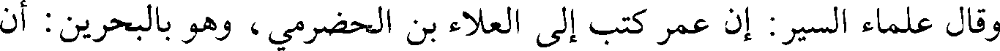
وقال علماء السير: إن عمر كتب إلى العلاء بن الحضرمي، وهو بالبحرين : أن
File: 000402.gt.txt (if the image is defective, simply delete all Arabic text and the line will be excluded)

سر إلى عتبة فقد وليتك عمله، واعلم أنك تقدم على رجل من المهاجرين الأولين الذين
File: 000403.gt.txt (if the image is defective, simply delete all Arabic text and the line will be excluded)

سبقت لهم من الله الحسنى، لم أعزله إلا لظني أنك أعنى عن المسلمين في تلك الناحية
File: 000404.gt.txt (if the image is defective, simply delete all Arabic text and the line will be excluded)

منه، فاعرف له حقه، ووفد / عتبة إلى عمر، وأمر المغيرة أن يصلي بالناس حتى قدم 70/أ
File: 000405.gt.txt (if the image is defective, simply delete all Arabic text and the line will be excluded)

مجاشع من الفرات، فإذا قدم فهو الأمير، فظفر مجاشع بأهل الفرات ورجع إلى
File: 000406.gt.txt (if the image is defective, simply delete all Arabic text and the line will be excluded)
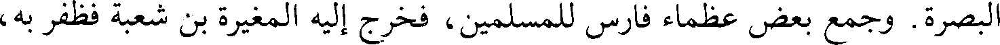
البصرة. وجمع بعض عظماء فارس للمسلمين، فخرج إليه المغيرة بن شعبة فظفر به،
File: 000407.gt.txt (if the image is defective, simply delete all Arabic text and the line will be excluded)

وأمر عتبة أن يرجع إلى عمله، فمات عتبة في الطريق. وكانت ولايته ستة أشهر.
File: 000408.gt.txt (if the image is defective, simply delete all Arabic text and the line will be excluded)

قال الواقدي : ورأيت من عندنا يقول : إنما كان عتبة مع سعد بن أبي وقاص،
File: 000409.gt.txt (if the image is defective, simply delete all Arabic text and the line will be excluded)

فوجه به إلى البصرة بكتاب عمر، وما زالت البصرة تعظم وتذكر فضائلها، وأهل البصرة
File: 000410.gt.txt (if the image is defective, simply delete all Arabic text and the line will be excluded)

يقولون لنا : الثلاثة عن الثلاثة؛ الرياشي والسجستاني والأخفش عن أبي زيد، وأبي
File: 000411.gt.txt (if the image is defective, simply delete all Arabic text and the line will be excluded)

عبيدة والأصمعي عن أبي عمرو بن العلاء، وعيسى بن عمر ويونس بن حبيب.
File: 000412.gt.txt (if the image is defective, simply delete all Arabic text and the line will be excluded)

وفي هذه السنة، أعني سنة أربع عشرة(1)
File: 000413.gt.txt (if the image is defective, simply delete all Arabic text and the line will be excluded)

حج بالناس عمر بن الخطاب رضي الله عنه، وكان على مكة عتاب بن أسيد،
File: 000414.gt.txt (if the image is defective, simply delete all Arabic text and the line will be excluded)

وعلى اليمن يعلى بن منبه، وعلى الكوفة سعد، وعلى الشام أبو عبيدة بن الجراح،
File: 000415.gt.txt (if the image is defective, simply delete all Arabic text and the line will be excluded)

وعلى البحرين عثمان بن أبي العاص وقيل : بل العلاء بن الحضرمي، وعلى عمان
File: 000416.gt.txt (if the image is defective, simply delete all Arabic text and the line will be excluded)

حذيفة بن محصن.
File: 000417.gt.txt (if the image is defective, simply delete all Arabic text and the line will be excluded)

سنة 14
File: 000418.gt.txt (if the image is defective, simply delete all Arabic text and the line will be excluded)

إلى السكر طلبا التطهير بالحد، وقد كان يكفيهما مجرد الندم، غير أنهما غضبا لله تعالى
File: 000419.gt.txt (if the image is defective, simply delete all Arabic text and the line will be excluded)

على أنفسهما المفرطة، فأسلماها إلى إقامة الحد.
File: 000420.gt.txt (if the image is defective, simply delete all Arabic text and the line will be excluded)

وأما إعادة عمر الضرب فإنما ضربه تأديبا لا حدا.
File: 000421.gt.txt (if the image is defective, simply delete all Arabic text and the line will be excluded)

ذكر من توفي في هذه السنة من الأكابر
File: 000422.gt.txt (if the image is defective, simply delete all Arabic text and the line will be excluded)

173 -الحارث بن قيس بن خالد بن مخلد بن عامر، أبو خالد(1) :
File: 000423.gt.txt (if the image is defective, simply delete all Arabic text and the line will be excluded)

شهد العقبة مع السبعين، وبدرا، والمشاهد كلها مع رسول الله صلعم. وشهد
File: 000424.gt.txt (if the image is defective, simply delete all Arabic text and the line will be excluded)

اليمامة مع خالد بن الوليد، فجرح يومئذ واندمل، ثم انتقض به فمات، فهو يعد من
File: 000425.gt.txt (if the image is defective, simply delete all Arabic text and the line will be excluded)

شهداء اليمامة(2).
File: 000426.gt.txt (if the image is defective, simply delete all Arabic text and the line will be excluded)

174 -زياد بن لبيد بن ثعلبة بن سنان بن عامر بن عدي(3) :
File: 000427.gt.txt (if the image is defective, simply delete all Arabic text and the line will be excluded)

شهد العقبة مع السبعين، وكان لما أسلم يكسر أصنام بني بياضة. وخرج زياد إلى
File: 000428.gt.txt (if the image is defective, simply delete all Arabic text and the line will be excluded)

النبي صلعم / فأقام معه بمكة وهاجر معه إلى المدينة، فهو مهاجري أنصاري، وشهد بدرا 71/أ
File: 000429.gt.txt (if the image is defective, simply delete all Arabic text and the line will be excluded)

والمشاهد كلها مع رسول الله صلعم. وتوفي رسول الله صلعم، وهو عامله على حضرموت،
File: 000430.gt.txt (if the image is defective, simply delete all Arabic text and the line will be excluded)

وولي قتال أهل الردة باليمن حين ارتد أهل البحرين مع الأشعث بن قيس فظفر بهم فقتل
File: 000431.gt.txt (if the image is defective, simply delete all Arabic text and the line will be excluded)

من قتل وأسر من أسر، وبعث بالأشعث بن قيس إلى أبي بكر في وثاق.
File: 000432.gt.txt (if the image is defective, simply delete all Arabic text and the line will be excluded)

175-[سلمة بن أسلم(4):
File: 000433.gt.txt (if the image is defective, simply delete all Arabic text and the line will be excluded)

شهد بدرا والمشاهد كلها مع رسول الله صلعم، وقتل بالعراق يوم جسر أبي عبيد
File: 000434.gt.txt (if the image is defective, simply delete all Arabic text and the line will be excluded)

الثقفي وهو ابن ثلاث وستين سنة.
File: 000436.gt.txt (if the image is defective, simply delete all Arabic text and the line will be excluded)

سعد أنه لا بد لكم منا، ولا سلاح معكم، فما جاء بكم؟ وكانوا يضحكون منهم ومن
File: 000437.gt.txt (if the image is defective, simply delete all Arabic text and the line will be excluded)

نبلهم، ويقولون هذه مغازل. فلما أبوا أن يرجعوا عن حربهم، قالوا لهم : ابعثوا لنا رجلا
File: 000438.gt.txt (if the image is defective, simply delete all Arabic text and the line will be excluded)

منكم عاقلا يبين لنا ما جاء بكم، فقال المغيرة بن شعبة : أنا، فعبر إليهم، فقعد مع رستم
File: 000439.gt.txt (if the image is defective, simply delete all Arabic text and the line will be excluded)

على السرير، فصاحوا عليه، فقال : إن هذا لم يزدني رفعة ولم ينقص صاحبكم، فقال
File: 000440.gt.txt (if the image is defective, simply delete all Arabic text and the line will be excluded)

رستم : صدق، ثم قال : ما جاء بكم؟ فقال : إنا كنا قوما في ضلالة، فبعث الله فينا نبيا
File: 000441.gt.txt (if the image is defective, simply delete all Arabic text and the line will be excluded)

فهدانا الله به، فإن قتلتمونا دخلنا الجنة، وإن قتلتم دخلتم النار، فقال : أو ماذا؟ قال : أو
File: 000442.gt.txt (if the image is defective, simply delete all Arabic text and the line will be excluded)

تؤدون الجزية، فلما سمعوا نخروا وصاحوا، وقالوا : لا صلح بيننا وبينكم، فقال
File: 000443.gt.txt (if the image is defective, simply delete all Arabic text and the line will be excluded)

المغيرة : تعبرون إلينا أو نعبر إليكم؟ فقال رستم : بل نعبر إليكم، فاستأخر المسلمون
File: 000444.gt.txt (if the image is defective, simply delete all Arabic text and the line will be excluded)

حتى عبر منهم من عبر / فحملوا عليهم فهزموهم، فأصاب المسلمون فيما أصابوا جرابا 61/أ
File: 000445.gt.txt (if the image is defective, simply delete all Arabic text and the line will be excluded)

من كافور فحسبوه ملحا، فألقوا منه في الطبيخ، فلما ذاقوه قالوا : لا خير في هذا.
File: 000446.gt.txt (if the image is defective, simply delete all Arabic text and the line will be excluded)

وانهزم القوم حتى انتهوا إلى الصراة، فطلبوهم فانهزموا حتى انتهوا إلى المدائن،
File: 000447.gt.txt (if the image is defective, simply delete all Arabic text and the line will be excluded)

ثم انهزموا حتى أتوا شاطئ دجلة(1)، فمنهم من عبر من كلواذى، ومنهم من عبر من أسفل
File: 000448.gt.txt (if the image is defective, simply delete all Arabic text and the line will be excluded)

المدائن، فحاصروهم حتى ما يجدون طعاما يأكلونه إلا كلابهم وسنانيرهم، فخرجوا
File: 000449.gt.txt (if the image is defective, simply delete all Arabic text and the line will be excluded)

ليلا فلحقوا بجلولاء، فأتاهم المسلمون؛ وعلى مقدمة سعد هاشم بن عتبة، وهي
File: 000450.gt.txt (if the image is defective, simply delete all Arabic text and the line will be excluded)

الوقعة التي كانت، فهزم المشركون حتى ألحقهم سعد بنهاوند.
File: 000451.gt.txt (if the image is defective, simply delete all Arabic text and the line will be excluded)

وبعث سعد بجماعة من المسلمين إلى يزدجرد يدعونه إلى الإسلام، فلما دخلوا
File: 000452.gt.txt (if the image is defective, simply delete all Arabic text and the line will be excluded)

عليه، قال : ما الذي دعاكم إلى غزونا، والولوع ببلادنا، فقال له النعمان بن مقرن : إن
File: 000453.gt.txt (if the image is defective, simply delete all Arabic text and the line will be excluded)

الله تعالى أرسل إلينا رسولا يدلنا على الخير، فأمرنا أن ندعو الناس إلى الإنصاف،
File: 000454.gt.txt (if the image is defective, simply delete all Arabic text and the line will be excluded)

ونحن ندعوكم إلى ديننا، فإن أبيتم فالمناجزة، فقال يزدجرد : إني لا أعلم في الأرض
File: 000455.gt.txt (if the image is defective, simply delete all Arabic text and the line will be excluded)

أمة أشقى منكم، فقال المغيرة بن زرارة الأسدي : اختر إن شئت الجزية عن يد وأنت
File: 000456.gt.txt (if the image is defective, simply delete all Arabic text and the line will be excluded)

صاغر، وإن شئت السيف، أو تسلم، فقال : أتستقبلني بمثل هذا؟ فقال : ما استقبلت
File: 000457.gt.txt (if the image is defective, simply delete all Arabic text and the line will be excluded)

إلا من كلمني ، فقال : لولا أن الرسل لا تقتل لقتلتك لا شيء لكم عندي، ثم قال :
File: 000458.gt.txt (if the image is defective, simply delete all Arabic text and the line will be excluded)

ائتوني بوقر من تراب واحملوه على أشرف هؤلاء، ثم سوقوه حتى يخرج من باب
File: 000459.gt.txt (if the image is defective, simply delete all Arabic text and the line will be excluded)

المدائن(2)، ارجعوا إلى صاحبكم فاعلموه أني مرسل إليهم رستم حتى يدفنه(3) وجنده
File: 000462.gt.txt (if the image is defective, simply delete all Arabic text and the line will be excluded)

يجترئ عليهما الأبطال إلى عسكر فيه سبعون ألفا، فلم يرض أن يخرج حتى سلب
File: 000463.gt.txt (if the image is defective, simply delete all Arabic text and the line will be excluded)

فارس الجند، وهتك أطناب بيته، فطلبناه فأدركه الأول، وهو فارس الناس، يعدل بألف
File: 000464.gt.txt (if the image is defective, simply delete all Arabic text and the line will be excluded)

فارس فقتله، ثم أدركه الثاني وهو نظيره فقتله، ثم أدركته ولا أظنني خلفت بعدي من
File: 000465.gt.txt (if the image is defective, simply delete all Arabic text and the line will be excluded)

يعدلني، فرأيت الموت فاستأسرت.
File: 000466.gt.txt (if the image is defective, simply delete all Arabic text and the line will be excluded)

ثم أخبرهم بأن الجند عشرون ومائة ألف، وأن الأتباع مثلهم خدام لهم، وأسلم
File: 000467.gt.txt (if the image is defective, simply delete all Arabic text and the line will be excluded)

الرجل وسماه سعد مسلما، وعاد إلى طليحة وقال : والله لا يهزمون على ما أرى من الوفاء
File: 000468.gt.txt (if the image is defective, simply delete all Arabic text and the line will be excluded)

والصدق والإصلاح، لا حاجة لي في صحبة فارس، فكان من أهل البلاء يومئذ.
File: 000469.gt.txt (if the image is defective, simply delete all Arabic text and the line will be excluded)

وقال سعد لقيس بن هبيرة(1): أخرج حتى تأتيني بخبر القوم، فخرج وسرح
File: 000470.gt.txt (if the image is defective, simply delete all Arabic text and the line will be excluded)

عمرو بن معدي كرب، وطليحة، فإذا خيل القوم، فأنشب قيس القتال وطاردهم، فكانت
File: 000471.gt.txt (if the image is defective, simply delete all Arabic text and the line will be excluded)

هزيمتهم، وأصاب منهم اثني عشر رجلا وثلاثة أسراء وأسلابا، فأتوا بالغنيمة سعدا.
File: 000472.gt.txt (if the image is defective, simply delete all Arabic text and the line will be excluded)

فلما أصبح رستم(2) تقدم حتى انتهى إلى العتيق فتباسر حتى إذا كان بحيال
File: 000473.gt.txt (if the image is defective, simply delete all Arabic text and the line will be excluded)

قديس خندق خندقا بحيال عسكر سعد، وكان رستم منجما، فكان يبكي مما يرى من
File: 000474.gt.txt (if the image is defective, simply delete all Arabic text and the line will be excluded)

أسباب تدل على غلبة المسلمين إياهم، ومما رأى أن عمر دخل عسكر فارس ومعه
File: 000475.gt.txt (if the image is defective, simply delete all Arabic text and the line will be excluded)

ملك، فختم [على] سلاحهم ثم حزمه ودفعه إلى عمر.
File: 000476.gt.txt (if the image is defective, simply delete all Arabic text and the line will be excluded)

وكان مع رستم ثلاثة وثلاثون فيلا، في القلب ثمانية عشر، وفي المجنبتين خمسة
File: 000477.gt.txt (if the image is defective, simply delete all Arabic text and the line will be excluded)

عشر[فيلا]، منها فيل سابور الأبيض، وكان أعظم الفيلة.
File: 000478.gt.txt (if the image is defective, simply delete all Arabic text and the line will be excluded)

فلما أصبح رستم(3) من ليلته التي بات بها في العتيق، ركب في خيله، فنظر إلى
File: 000479.gt.txt (if the image is defective, simply delete all Arabic text and the line will be excluded)

المسلمين، ثم صعد نحو القنطرة وحرز[الناس](4)، وراسل زهرة، فخرج إليه وأراد أن
File: 000480.gt.txt (if the image is defective, simply delete all Arabic text and the line will be excluded)

63/أ يصالحهم، / وجعل يقول : إنكم جيراننا، وقد كانت طائفة منكم في سلطاننا، فكنا
File: 000481.gt.txt (if the image is defective, simply delete all Arabic text and the line will be excluded)

نحسن جوارهم(5)، ونكف الأذى عنهم، ونوليهم المرافق(6) الكثيرة، [فنرعيهم
File: 000484.gt.txt (if the image is defective, simply delete all Arabic text and the line will be excluded)

وقال عمر لعتبة(1): إني أريد أن أوجهك إلى أرض / الهند - وكانت البصرة تدعى 69/أ
File: 000485.gt.txt (if the image is defective, simply delete all Arabic text and the line will be excluded)

أرض الهند، فيها حجارة بيض خشنة - لتمنع أهلها أن يمدوا إخوان فارس، فنزلها في
File: 000486.gt.txt (if the image is defective, simply delete all Arabic text and the line will be excluded)

ربيع الأول سنة أربع عشرة، وفيها سبع دساكر، فكتب إليه عمر : اجمع الناس موضعا
File: 000487.gt.txt (if the image is defective, simply delete all Arabic text and the line will be excluded)

واحدا وقد كتبت إلى العلاء بن الحضرمي أن يمدك بعرفجة بن هرثمة، وهو ذو مكايدة
File: 000488.gt.txt (if the image is defective, simply delete all Arabic text and the line will be excluded)

للعدو، فإذا قدم عليك فاستشره، وادع إلى الله، فمن أجابك فاقبل منه، ومن أبى
File: 000489.gt.txt (if the image is defective, simply delete all Arabic text and the line will be excluded)

فالجزية وإلا السيف، واتق مصارع الظالمين.
File: 000490.gt.txt (if the image is defective, simply delete all Arabic text and the line will be excluded)

وفي رواية(2): أن عمر قال له : انطلق أنت ومن معك حتى إذا كنتم في أقصى
File: 000491.gt.txt (if the image is defective, simply delete all Arabic text and the line will be excluded)

أرض العرب، وأدنى أرض العجم فأقيموا. فنزلوا موضع البصرة.
File: 000492.gt.txt (if the image is defective, simply delete all Arabic text and the line will be excluded)

فأقام شهرا(3)، ثم خرج إليه أهل الأبلة، فناهضهم عتبة، فمنحه الله أكتافهم
File: 000493.gt.txt (if the image is defective, simply delete all Arabic text and the line will be excluded)

وانهزموا، فأصاب المسلمون رحلا كثيرا، وفتح الله الفتح على يد أبي بكرة في خمسة
File: 000494.gt.txt (if the image is defective, simply delete all Arabic text and the line will be excluded)

أنفس، وشهد فتح الأبلة مائتان وسبعون.
File: 000495.gt.txt (if the image is defective, simply delete all Arabic text and the line will be excluded)

قال : أخبرنا القاضي أبو الحسن محمد بن علي بن صخر، قال : أخبرنا أبو غياث
File: 000496.gt.txt (if the image is defective, simply delete all Arabic text and the line will be excluded)

أحمد بن الحسن بن أيوب، قال : أخبرنا أبو روق أحمد بن محمد، قال : حدثنا
File: 000497.gt.txt (if the image is defective, simply delete all Arabic text and the line will be excluded)

القاسم بن محمد بن عباد المهلبي ، قال : حدثنا موسى بن المثنى بن سلمة بن المحبق
File: 000498.gt.txt (if the image is defective, simply delete all Arabic text and the line will be excluded)

الهذلي](4) عن أبيه، عن جده قال :
File: 000499.gt.txt (if the image is defective, simply delete all Arabic text and the line will be excluded)

شهدت فتح الأبلة وأميرنا قطبة بن قتادة السدوسي، فاقتسمت الغنائم، فدفعت
File: 000500.gt.txt (if the image is defective, simply delete all Arabic text and the line will be excluded)

إلي قدر من نحاس، فلما صارت في يدي تبين لي أنها ذهب، وعرف ذلك المسلمون
File: 000501.gt.txt (if the image is defective, simply delete all Arabic text and the line will be excluded)

فنازعوني إلى أميرنا، فكتب إلى عمر بن الخطاب رضي الله عنه يخبره بذلك، فكتب
File: 000502.gt.txt (if the image is defective, simply delete all Arabic text and the line will be excluded)

إليه عمر: صر إلى يمينه أنه لم يعلم أنها ذهب إلا بعدما صارت إليه، فإن حلف فادفعها
File: 000503.gt.txt (if the image is defective, simply delete all Arabic text and the line will be excluded)

سنة 16
File: 000504.gt.txt (if the image is defective, simply delete all Arabic text and the line will be excluded)

الجن لا الإنس، وتركوا جمهور أموالهم، وكان في بيوت الأموال ثلاثة ألف ألف،
File: 000505.gt.txt (if the image is defective, simply delete all Arabic text and the line will be excluded)

فأخذوا نصف ذلك وهربوا وتركوا[الباقي، وخرجوا من المتاع بما يقدرون عليه، وتركوا]
File: 000506.gt.txt (if the image is defective, simply delete all Arabic text and the line will be excluded)

من الثياب والمتاع والأواني، وما أعدوا للحصار من البقر والغنم والطعام ما لا يحصى
File: 000507.gt.txt (if the image is defective, simply delete all Arabic text and the line will be excluded)

قيمته. وكان يزدجرد قد أخرج عياله إلى حلوان، فلحق بعياله، فدخل المسلمون المدائن
File: 000508.gt.txt (if the image is defective, simply delete all Arabic text and the line will be excluded)

وليس فيها أحد إلا أنه قد بقي في القصر الأبيض قوم قد تحصنوا به، فعرض عليهم
File: 000509.gt.txt (if the image is defective, simply delete all Arabic text and the line will be excluded)

المسلمون الإسلام أو الجزية أو القتل، فاختاروا الجزية.
File: 000510.gt.txt (if the image is defective, simply delete all Arabic text and the line will be excluded)

ونزل سعد القصر الأبيض، واتخذ الإيوان مصلى، وجعل يقرأ: (كم تركوا من
File: 000511.gt.txt (if the image is defective, simply delete all Arabic text and the line will be excluded)

جنات. وعيون. [وزروع ومقام كريم . ونعمة كانوا فيها فاكهين. كذلك وأورثناها]
File: 000512.gt.txt (if the image is defective, simply delete all Arabic text and the line will be excluded)

قوما آخرين)(1). وأتم الصلاة، ثم دخلها لأنه كان على نية الإقامة، وصلى الجمعة،
File: 000513.gt.txt (if the image is defective, simply delete all Arabic text and the line will be excluded)

وكانت أول جمعة جمعت بالعراق جمعة المدائن.
File: 000514.gt.txt (if the image is defective, simply delete all Arabic text and the line will be excluded)

الحسين بن عمر بن برهان، وعلي بن محمد المعدل، قالا : أخبرنا عثمان بن أحمد
File: 000515.gt.txt (if the image is defective, simply delete all Arabic text and the line will be excluded)

الدقاق، أخبرنا أبو عوف البزوري، حدثنا عمرو بن حماد [يعني بن طلحة القناد](2)،
File: 000516.gt.txt (if the image is defective, simply delete all Arabic text and the line will be excluded)

حدثنا أسباط، عن سماك](3)، عن جابر بن سمرة، عن النبي صلعم،/أنه قال :
File: 000517.gt.txt (if the image is defective, simply delete all Arabic text and the line will be excluded)
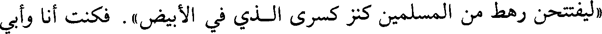
«ليفتتحن رهط من المسلمين كنز كسرى الذي في الأبيض». فكنت أنا وأبي
File: 000518.gt.txt (if the image is defective, simply delete all Arabic text and the line will be excluded)

منهم، فأصبنا من ذلك ألفي درهم(4).
File: 000519.gt.txt (if the image is defective, simply delete all Arabic text and the line will be excluded)

رزق، حدثنا إبراهيم بن محمد المزكي، أخبرنا محمد بن إسحاق السراج، حدثنا
File: 000520.gt.txt (if the image is defective, simply delete all Arabic text and the line will be excluded)

سعدان بن نصر حدثنا شبابة بن سوار، حدثنا أيوب بن طهمان]:
File: 000521.gt.txt (if the image is defective, simply delete all Arabic text and the line will be excluded)

المسلمين، فأقام سعد بعد الفتح شهرين بالقادسية، ثم ارتحل بعد الفراغ من أمرها لأيام
File: 000522.gt.txt (if the image is defective, simply delete all Arabic text and the line will be excluded)

بقين من شوال، ولقي جماعة من أصحابه جموعا من فارس يوم برس فهزموهم إلى
File: 000523.gt.txt (if the image is defective, simply delete all Arabic text and the line will be excluded)

بابل، فلحقوهم فقتلوا منهم.
File: 000524.gt.txt (if the image is defective, simply delete all Arabic text and the line will be excluded)
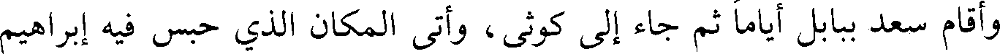
وأقام سعد ببابل أياما ثم جاء إلى كوثى، وأتى المكان الذي حبس فيه إبراهيم
File: 000525.gt.txt (if the image is defective, simply delete all Arabic text and the line will be excluded)
عليه السلام، وقدم سعد زهرة بن الحوية إلى بهرسير، فتلقاه شيرزاد بساباط بالصلح
File: 000526.gt.txt (if the image is defective, simply delete all Arabic text and the line will be excluded)

وتأدية الجزية، فبعثه إلى سعد، ولحق سعد بزهرة فنزلوا بهرسير، وبث سعد الخيل
File: 000527.gt.txt (if the image is defective, simply delete all Arabic text and the line will be excluded)

فأغارت ما بين دجلة إلى من له عهد من أهل الفرات، فأصابوا مائة ألف فلاح، فكتب
File: 000528.gt.txt (if the image is defective, simply delete all Arabic text and the line will be excluded)

بذلك إلى عمر، فكتب عمر : إذا كان الفلاحون مقيمون لم يعينوا عليكم فهو أمانهم،
File: 000529.gt.txt (if the image is defective, simply delete all Arabic text and the line will be excluded)

ومن هرب فأدركتموه فشأنكم به.
File: 000530.gt.txt (if the image is defective, simply delete all Arabic text and the line will be excluded)
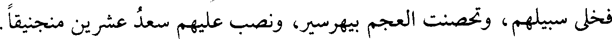
فخلى سبيلهم، وتحصنت العجم بيهرسير، ونصب عليهم سعد عشرين منجنيقا.
File: 000531.gt.txt (if the image is defective, simply delete all Arabic text and the line will be excluded)

وحصروهم شهرين حتى أكلوا الكلاب والسنانير، وربما خرج الأعاجم يمشون على
File: 000532.gt.txt (if the image is defective, simply delete all Arabic text and the line will be excluded)

المسنيات(1) المشرفة على دجلة لقتال المسلمين فلا يقومون لهم، [ثم تجردوا يوما
File: 000533.gt.txt (if the image is defective, simply delete all Arabic text and the line will be excluded)

للحرب، فقاتلهم المسلمون فلم يثبتوا لهم](2)،فنزلوا، ووقع سهم في زهير بن الحوية،
File: 000534.gt.txt (if the image is defective, simply delete all Arabic text and the line will be excluded)

فقال زهرة : أخرجوه، فقال : دعوني فإن نفسي معي ما دام في لعلي أصيب منهم بطعنة
File: 000535.gt.txt (if the image is defective, simply delete all Arabic text and the line will be excluded)
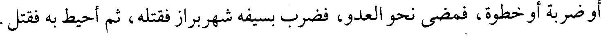
أو ضربة أو خطوة، فمضى نحو العدو، فضرب بسيفه شهربراز فقتله، ثم أحيط به فقتل.
File: 000536.gt.txt (if the image is defective, simply delete all Arabic text and the line will be excluded)

كل هذا وملكهم متحصن في مدينة، فبعث إلى المسلمين رسولا يقول لهم : إن
File: 000537.gt.txt (if the image is defective, simply delete all Arabic text and the line will be excluded)
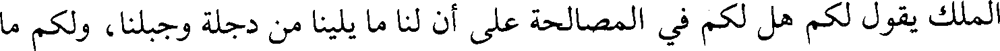
الملك يقول لكم هل لكم في المصالحة على أن لنا ما يلينا من دجلة وجبلنا، ولكم ما
File: 000538.gt.txt (if the image is defective, simply delete all Arabic text and the line will be excluded)

78/ب يليكم من دجلة إلى جبلكم؟ أما شبعتم لا أشبع الله بطونكم. فكلمه الأسود بن / قطبة
File: 000539.gt.txt (if the image is defective, simply delete all Arabic text and the line will be excluded)
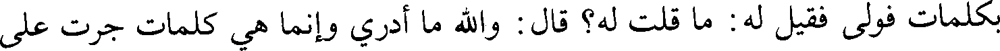
بكلمات فولى فقيل له : ما قلت له؟ قال : والله ما أدري وإنما هي كلمات جرت على
File: 000540.gt.txt (if the image is defective, simply delete all Arabic text and the line will be excluded)
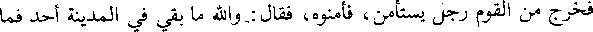
فخرج من القوم رجل يستأمن، فأمنوه، فقال : والله ما بقي في المدينة أحد فما
File: 000541.gt.txt (if the image is defective, simply delete all Arabic text and the line will be excluded)

يمنعكم، فتسورها الرجال وقالوا له : لأي شيء هربوا؟ فقال : بعث الملك يعرض
File: 000542.gt.txt (if the image is defective, simply delete all Arabic text and the line will be excluded)
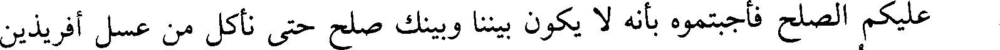
عليكم الصلح فأجبتموه بأنه لا يكون بيننا وبينك صلح حتى نأكل من عسل أفريذين
File: 000543.gt.txt (if the image is defective, simply delete all Arabic text and the line will be excluded)
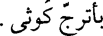
بأترج كوثى.
File: 000544.gt.txt (if the image is defective, simply delete all Arabic text and the line will be excluded)

حدثنا الحسن بن علي القطان، أخبرنا إسماعيل بن عيسى العطار، أخبرنا إسحاق بن
File: 000545.gt.txt (if the image is defective, simply delete all Arabic text and the line will be excluded)

بشر أبو حذيفة، قال : قال](1) ابن إسحاق : حدثني عبد الله أن أهل الحيرة، قالوا
File: 000546.gt.txt (if the image is defective, simply delete all Arabic text and the line will be excluded)

للمثنى :
File: 000547.gt.txt (if the image is defective, simply delete all Arabic text and the line will be excluded)

ألا ندلك على قرية يأتيها تجار مدائن كسرى وتجار السواد، وتجتمع بها كل سنة
File: 000548.gt.txt (if the image is defective, simply delete all Arabic text and the line will be excluded)

من أموال الناس مثل خراج العراق، وهذه أيام سوقهم التي يجتمعون فيها، فإن أنت
File: 000549.gt.txt (if the image is defective, simply delete all Arabic text and the line will be excluded)
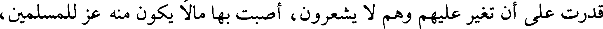
قدرت على أن تغير عليهم وهم لا يشعرون، أصبت بها مالا يكون منه عز للمسلمين،
File: 000550.gt.txt (if the image is defective, simply delete all Arabic text and the line will be excluded)

وقوة على عدوهم، وبينها وبين مدائن كسرى عامة يوم، فقال لهم : وكيف لي بها؟ فقالوا
File: 000551.gt.txt (if the image is defective, simply delete all Arabic text and the line will be excluded)
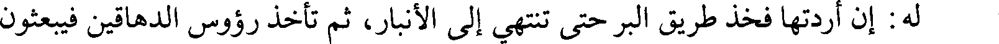
له: إن أردتها فخذ طريق البر حتى تنتهي إلى الأنبار، ثم تأخذ رؤوس الدهاقين فيبعثون
File: 000552.gt.txt (if the image is defective, simply delete all Arabic text and the line will be excluded)

معك الأدلاء، فتسير سواد ليلة من الأنبار حتى تأتيهم ضحى(2).
File: 000553.gt.txt (if the image is defective, simply delete all Arabic text and the line will be excluded)

قال: فخرج من الغد ومعه أدلاء أهل الحيرة حتى دخل الأنبار، فنزل بصاحبها
File: 000554.gt.txt (if the image is defective, simply delete all Arabic text and the line will be excluded)

فتحصن منه، فأرسل إليه : انزل فإنك آمن على دينك وقريتك،
File: 000555.gt.txt (if the image is defective, simply delete all Arabic text and the line will be excluded)

وترجع سالما إلى حصنك ، فتوثق عليه، ثم نزل فقال : إني أريد أن
File: 000556.gt.txt (if the image is defective, simply delete all Arabic text and the line will be excluded)

تبعث معي دليلا يدلني على بغداد، فإني أريد أن أعبر منها إلى المدائن، قال : أنا أجيء
File: 000557.gt.txt (if the image is defective, simply delete all Arabic text and the line will be excluded)
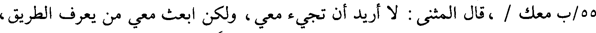
55/ب معك / ،قال المثنى : لا أريد أن تجيء معي، ولكن ابعث معي من يعرف الطريق،
File: 000558.gt.txt (if the image is defective, simply delete all Arabic text and the line will be excluded)

ففعل وأمر لهم بعلف وطعام وزاد، وبعث معهم دليلا، فأقبل حتى بلغ المنصف قال له
File: 000559.gt.txt (if the image is defective, simply delete all Arabic text and the line will be excluded)

المثنى: كم بيننا وبين هذه القرية؟ قال : أربع فراسخ أو خمسة، وقد بقي عليك ليل،
File: 000560.gt.txt (if the image is defective, simply delete all Arabic text and the line will be excluded)

فقال لأصحابه : انزلوا واقصموا واطعموا وابعثوا الطلائع، فلا تلقون أحدا إلا حبستموه،
File: 000561.gt.txt (if the image is defective, simply delete all Arabic text and the line will be excluded)

ثم سار بهم فصبحهم في أسواقهم، فوضع فيهم السيف، فقتل وأخذ الأموال وقال
File: 000562.gt.txt (if the image is defective, simply delete all Arabic text and the line will be excluded)

لأصحابه : لا تأخذوا إلا الذهب والفضة، ومن المتاع ما يقدر الرجل منكم على حمله
File: 000563.gt.txt (if the image is defective, simply delete all Arabic text and the line will be excluded)

على دابته، وهرب الناس وتركوا أمتعتهم، وملأ المسلمون أيديهم من الصفراء
File: 000564.gt.txt (if the image is defective, simply delete all Arabic text and the line will be excluded)
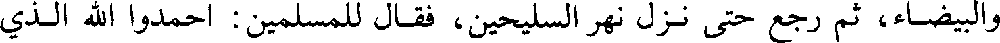
والبيضاء، ثم رجع حتى نزل نهر السليحين، فقال للمسلمين : احمدوا الله الذي
File: 000565.gt.txt (if the image is defective, simply delete all Arabic text and the line will be excluded)

209
File: 000566.gt.txt (if the image is defective, simply delete all Arabic text and the line will be excluded)

فدفعه إلى صاحب الأقباض، فقال(1) الذي معه ما رأينا مثل هذا قط، ما يعدله ما عندنا
File: 000567.gt.txt (if the image is defective, simply delete all Arabic text and the line will be excluded)

ولا يقاربه، فقالوا له : هل أخذت منه شيئا، فقال : أما والله، لولا الله ما أتيتكم به،
File: 000568.gt.txt (if the image is defective, simply delete all Arabic text and the line will be excluded)

فعرفوا أن للرجل شأنا، فقالوا : من أنت؟ فقال : والله ما أخبركم لتحمدوني، ولا غيركم
File: 000569.gt.txt (if the image is defective, simply delete all Arabic text and the line will be excluded)

ليقرظوني، ولكني أحمد الله وأرضى بثوابه . فأتبعوه رجلا حتى انتهى إلى أصحابه،
File: 000570.gt.txt (if the image is defective, simply delete all Arabic text and the line will be excluded)

فسأل عنه، فإذا هو عامر بن عبد قيس.
File: 000571.gt.txt (if the image is defective, simply delete all Arabic text and the line will be excluded)
والله الذي لا إله إلا هو؛ ما أطلعنا على أحد من أهل القادسية، أنه يريد الدنيا مع
File: 000572.gt.txt (if the image is defective, simply delete all Arabic text and the line will be excluded)
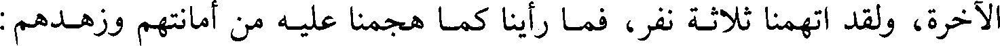
الآخرة، ولقد اتهمنا ثلاثة نفر، فما رأينا كما هجمنا عليه من أمانتهم وزهدهم :
File: 000573.gt.txt (if the image is defective, simply delete all Arabic text and the line will be excluded)

طليحة بن خويلد، وعمرو بن معدي كرب، وقيس بن المكشوح.
File: 000574.gt.txt (if the image is defective, simply delete all Arabic text and the line will be excluded)

بسيف كسرى ومنطقته على عمر بن الخطاب رضي الله عنه، قال : إن أقواما أدوا هذا
File: 000575.gt.txt (if the image is defective, simply delete all Arabic text and the line will be excluded)
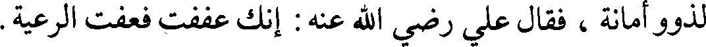
لذوو أمانة ، فقال علي رضي الله عنه : إنك عففت فعفت الرعية.
File: 000576.gt.txt (if the image is defective, simply delete all Arabic text and the line will be excluded)

الخمس، وأدخل فيه كل شيء أراد أن يعجب به عمر، من ثياب كسرى وحليه وسيفه
File: 000577.gt.txt (if the image is defective, simply delete all Arabic text and the line will be excluded)

ونحو ذلك، وفضل بعد القسم بين الناس، وأخرج خمس القطف، وهو بساط، فلم
File: 000578.gt.txt (if the image is defective, simply delete all Arabic text and the line will be excluded)

تعتدل قيمته، فقال للمسلمين : هل لكم في أن تطيب أنفسنا عن أربعة أخماس، ونبعثه
File: 000579.gt.txt (if the image is defective, simply delete all Arabic text and the line will be excluded)

إلى عمر فيضعه حيث يرى، قالوا : نعم، فبعث به وكان ستين ذراعا في ستين ذراعا، فيه
File: 000580.gt.txt (if the image is defective, simply delete all Arabic text and the line will be excluded)

طرق كالأنهار، وقصور كالدور، وفي حافاته كالأرض المزروعة المبقلة [بالنبات](7) في
File: 000581.gt.txt (if the image is defective, simply delete all Arabic text and the line will be excluded)

205
File: 000583.gt.txt (if the image is defective, simply delete all Arabic text and the line will be excluded)

فلما دخل سعد والمسلمون بهرسير - وهي المدينة الدنيا - طلبوا السفن ليعبروا
File: 000584.gt.txt (if the image is defective, simply delete all Arabic text and the line will be excluded)
إلى المدينة القصوى، وهي المدائن، فلم يقدروا على شيء ووجدوا القوم قد ضموا
File: 000585.gt.txt (if the image is defective, simply delete all Arabic text and the line will be excluded)

السفن ولاح للمسلمين الأبيض(1)، فكبروا وقالوا : هذا أبيض كسرى؛ هذا ما وعد الله
File: 000586.gt.txt (if the image is defective, simply delete all Arabic text and the line will be excluded)
فأقاموا ببهرسير أياما من صفر، ثم جاء أعلاج، فدلوهم على مخاضة، فتردد سعد
File: 000587.gt.txt (if the image is defective, simply delete all Arabic text and the line will be excluded)

في ذلك، ثم فاجأهم المد، فرأى رؤيا، أن خيول المسلمين قد اقتحمت، فعبرت،
File: 000588.gt.txt (if the image is defective, simply delete all Arabic text and the line will be excluded)

فقال للناس : إني قد عزمت على قطع هذا البحر إليهم، فقالوا : عزم الله لنا ولك على
File: 000589.gt.txt (if the image is defective, simply delete all Arabic text and the line will be excluded)

الرشد، فافعل.
File: 000590.gt.txt (if the image is defective, simply delete all Arabic text and the line will be excluded)

وأتى بعض العلوج فقال لسعد : إن أقمت ثلاثا ذهب يزدجرد بكل شيء من
File: 000591.gt.txt (if the image is defective, simply delete all Arabic text and the line will be excluded)
المدائن، فهيجه على العبور.
File: 000592.gt.txt (if the image is defective, simply delete all Arabic text and the line will be excluded)

فقال سعد : من يبدأ ويحمي لنا الفراض حتى تتلاحق به الناس لكيلا يمنعوهم من
File: 000593.gt.txt (if the image is defective, simply delete all Arabic text and the line will be excluded)

الخروج؟ فانتدب له عاصم بن عمرو أول الناس، وانتدب معه ستمائة من أهل
File: 000594.gt.txt (if the image is defective, simply delete all Arabic text and the line will be excluded)

النجدات، فسار فيهم عاصم حتى وقف على شاطئ دجلة، ثم اقتحموا. فجاءت
File: 000595.gt.txt (if the image is defective, simply delete all Arabic text and the line will be excluded)

الأعاجم فقال عاصم : الرماح، فطعنوا القوم فلحقوهم فقتلوا عامتهم. فحينئذ أذن سعد
File: 000596.gt.txt (if the image is defective, simply delete all Arabic text and the line will be excluded)

للناس في الاقتحام، فاقتحموا دجلة، وإنها لترمى بالزبد، وإن الناس ليتحدثون في
File: 000597.gt.txt (if the image is defective, simply delete all Arabic text and the line will be excluded)

عومهم كما يتحدثون على وجه الأرض، فكان الفرس يقوم براكبه، فربما لم يبلغ الماء
File: 000598.gt.txt (if the image is defective, simply delete all Arabic text and the line will be excluded)

الحزام، وربما أعيا الفرس فتظهر له تلعة فيستريح عليها.
File: 000599.gt.txt (if the image is defective, simply delete all Arabic text and the line will be excluded)

وكان سعد يقول في عومه : حسبنا الله ونعم الوكيل، وسلمان يحادثه في عومه
File: 000600.gt.txt (if the image is defective, simply delete all Arabic text and the line will be excluded)

حتى خرجوا فلم يفقدوا شيئا، ولم يغرق إلا رجل وقع من فرسه في الماء، فعاد إليه
File: 000601.gt.txt (if the image is defective, simply delete all Arabic text and the line will be excluded)

رجل، فأخذ بيده فعبر. ووقع من رجل قدح، فأخذه آخر، فجاء به إلى / العسكر فعرفه 79/أ
File: 000602.gt.txt (if the image is defective, simply delete all Arabic text and the line will be excluded)

فلما رأى العدو ذلك هربوا لا يلوون على شيء، وجعلوا يقولون : إنما تقاتلون
File: 000603.gt.txt (if the image is defective, simply delete all Arabic text and the line will be excluded)
148
File: 000604.gt.txt (if the image is defective, simply delete all Arabic text and the line will be excluded)

إني لغال بالحسام مشفرك وهالك وفي الهلاك لي درك
File: 000605.gt.txt (if the image is defective, simply delete all Arabic text and the line will be excluded)

ثم ضربه على خرطومه فقطعه ووقع عليه الفيل فقتله. فلما بصر الناس بأبي عبيد
File: 000606.gt.txt (if the image is defective, simply delete all Arabic text and the line will be excluded)

45/ب تحت الفيل ضعفت / نفوسهم، ثم حاربوا الفيل حتى تنحى عنه فاجتروه إلى
File: 000607.gt.txt (if the image is defective, simply delete all Arabic text and the line will be excluded)

المسلمين، وجال المسلمون، فركبهم أهل فارس، وأخذ اللواء سبعة من المسلمين،
File: 000608.gt.txt (if the image is defective, simply delete all Arabic text and the line will be excluded)

كلهم يقتل،فبادر عبد الله بن مرثد الثقفي الجسر فقطعه وانتهى الناس إليه والسيوف تأخذهم،
File: 000609.gt.txt (if the image is defective, simply delete all Arabic text and the line will be excluded)

فتهافتوا في الفرات، فأصابوا يومئذ من المسلمين أربعة آلاف من بين غريق وقتيل،وهرب
File: 000610.gt.txt (if the image is defective, simply delete all Arabic text and the line will be excluded)

ألفان، وبقي ثلاثة آلاف، وحمى المثنى الناس وعاصم والكلج الضبي ومذعور، حتى
File: 000611.gt.txt (if the image is defective, simply delete all Arabic text and the line will be excluded)

عقدوا الجسر وعبروهم ثم عبروا في آثارهم، وخرج الحماة كلهم.
File: 000612.gt.txt (if the image is defective, simply delete all Arabic text and the line will be excluded)

فبينما أهل فارس يحاولون العبور أتاهم الخبر أن الناس بالمدائن قد ثاروا برستم،
File: 000613.gt.txt (if the image is defective, simply delete all Arabic text and the line will be excluded)
ونقضوا الذي بينهم وبينه وبلغ عمر الخبر فاشتد عليه، وقال : لو أن أبا عبيد انحاز إلي
File: 000614.gt.txt (if the image is defective, simply delete all Arabic text and the line will be excluded)

لكنت له فئة. وقال للمنهزمين : أنا فئتكم.
File: 000615.gt.txt (if the image is defective, simply delete all Arabic text and the line will be excluded)

وكان بين وقعة اليرموك والجسر أربعون ليلة، فكانت اليرموك في جمادى الآخرة،
File: 000616.gt.txt (if the image is defective, simply delete all Arabic text and the line will be excluded)

قصة البويب(1)
File: 000617.gt.txt (if the image is defective, simply delete all Arabic text and the line will be excluded)

والجسر في شعبان.
File: 000618.gt.txt (if the image is defective, simply delete all Arabic text and the line will be excluded)

ثم أن المثنى خرج في آثار القوم، فأسر منهم وقتل، وبعث إلى من يليه فاجتمع
File: 000619.gt.txt (if the image is defective, simply delete all Arabic text and the line will be excluded)

إليه جمع عظيم، فبلغ ذلك رستم والفيرزان، فبعثا إليه مهران الهمذاني، وبلغ المثنى
File: 000620.gt.txt (if the image is defective, simply delete all Arabic text and the line will be excluded)

[الخبر](2)، فجمع الناس بالبويب، فعبر مهران فنزل على شاطئ الفرات، فنادى
File: 000621.gt.txt (if the image is defective, simply delete all Arabic text and the line will be excluded)

المثنى في الناس : انهدوا لعدوكم، قم قال : إني مكبر ثلاثا فتهيأوا، ثم احملوا مع
File: 000622.gt.txt (if the image is defective, simply delete all Arabic text and the line will be excluded)

الرابعة.
File: 000623.gt.txt (if the image is defective, simply delete all Arabic text and the line will be excluded)

فلما كبر أول تكبيرة أعجلهم فارس فخالطوهم وركدت الحرب، وهزمت فارس،
File: 000624.gt.txt (if the image is defective, simply delete all Arabic text and the line will be excluded)

وهلك مهران، وتمكن المسلمون من الغارة على السواد فيما بينهم وبين دجلة،
File: 000625.gt.txt (if the image is defective, simply delete all Arabic text and the line will be excluded)

فدون الدواوين، ففرض للمهاجرين في خمسة آلاف، والأنصار في أربعة آلاف،
File: 000626.gt.txt (if the image is defective, simply delete all Arabic text and the line will be excluded)

وفرض لأزواج رسول الله صلعم في إثني عشر ألفا.
File: 000627.gt.txt (if the image is defective, simply delete all Arabic text and the line will be excluded)

أحمد بن معروف، حدثنا ابن الفهم، حدثنا محمد بن سعد، حدثنا الحسن بن
File: 000628.gt.txt (if the image is defective, simply delete all Arabic text and the line will be excluded)

موسى، حدثنا زهير، حدثنا أبوإسحاق](1)، عن مصعب بن سعد:
File: 000629.gt.txt (if the image is defective, simply delete all Arabic text and the line will be excluded)

أن عمر رضي الله عنه فرض لأهل بدر والمهاجرين والأنصار ستة آلاف ستة
File: 000630.gt.txt (if the image is defective, simply delete all Arabic text and the line will be excluded)

آلاف، وفرض لأزواج رسول الله صلعم، ففضل عليهن عائشة، ففرض لها في اثني عشر
File: 000631.gt.txt (if the image is defective, simply delete all Arabic text and the line will be excluded)

75/أ ألفا، ولسائرهن في عشرة آلاف غير جويرية وصفية، / فرض لهما في ستة آلاف،
File: 000632.gt.txt (if the image is defective, simply delete all Arabic text and the line will be excluded)

وفرض للمهاجرات الأول أسماء بنت عميس، وأسماء بنت أبي بكر، وأم عبد أم
File: 000633.gt.txt (if the image is defective, simply delete all Arabic text and the line will be excluded)

ابن مسعود ألفا ألفا.
File: 000634.gt.txt (if the image is defective, simply delete all Arabic text and the line will be excluded)

النقور، أخبرنا المخلص، أخبرنا أحمد بن عبد الله بن سيف، حدثنا السري بن يحيى،
File: 000635.gt.txt (if the image is defective, simply delete all Arabic text and the line will be excluded)

حدثنا شعيب، عن سيف](2)، عن محمد، والمهلب، وعمرو، وطلحة، وسعيد،
File: 000636.gt.txt (if the image is defective, simply delete all Arabic text and the line will be excluded)

لما فتح الله على المسلمين وقتل رستم، وقدمت على عمر رضي الله عنه فتوح من
File: 000637.gt.txt (if the image is defective, simply delete all Arabic text and the line will be excluded)

الشام، جمع المسلمين وقال :ما يحل للوالي من هذا المال؟(3) فقالوا :أما لخاصته فقوته
File: 000638.gt.txt (if the image is defective, simply delete all Arabic text and the line will be excluded)

وقوت عياله، لا وكس ولا شطط، وكسوته وكسوتهم للشتاء والصيف، ودابتان لجهاده
File: 000639.gt.txt (if the image is defective, simply delete all Arabic text and the line will be excluded)

وحوائجه وحملانه إلى حجه وعمرته والقسم بالسوية، وأن يعطي أهل البلاء على قدر
File: 000640.gt.txt (if the image is defective, simply delete all Arabic text and the line will be excluded)

بلائهم ويرم أمور المسلمين بعده، ويتعاهدهم في الشدائد والنوازل حتى تنكشف،
File: 000641.gt.txt (if the image is defective, simply delete all Arabic text and the line will be excluded)

ويبدأ بأهل الفيء.
File: 000642.gt.txt (if the image is defective, simply delete all Arabic text and the line will be excluded)

و [عن سيف، عن محمد بن عبد، وعبد الله بن عمر، عن نافع](4)، عن ابن
File: 000643.gt.txt (if the image is defective, simply delete all Arabic text and the line will be excluded)

عمر، قال:
File: 000644.gt.txt (if the image is defective, simply delete all Arabic text and the line will be excluded)

195
File: 000645.gt.txt (if the image is defective, simply delete all Arabic text and the line will be excluded)

ردف أولئك خمسين ومائتين، ولمن ردفهم مائتين، وكان آخر من فرض له أهل هجر
File: 000646.gt.txt (if the image is defective, simply delete all Arabic text and the line will be excluded)

على مائتين.
File: 000647.gt.txt (if the image is defective, simply delete all Arabic text and the line will be excluded)

وفرض لأزواج رسول الله صلعم عشرة آلاف عشرة آلاف، ووصل عائشة(1) بألفين
File: 000648.gt.txt (if the image is defective, simply delete all Arabic text and the line will be excluded)

فأبت، فقال : هذا بفضل منزلتك عند رسول الله صلعم، / فإذا أخذتيها فشأنك. 74/ب
File: 000649.gt.txt (if the image is defective, simply delete all Arabic text and the line will be excluded)

وجعل نساء أهل بدر على خمسمائة خمسمائة، ونساء ما بعد بدر إلى الحديبية
File: 000650.gt.txt (if the image is defective, simply delete all Arabic text and the line will be excluded)

على أربعمائة، ونساء ما بعد ذلك على ثلاثمائة، ونساء أهل القادسية مائتين. والصبيان
File: 000651.gt.txt (if the image is defective, simply delete all Arabic text and the line will be excluded)

من أهل بدر وغيرهم مائة. وقال قائل(2) : يا أمير المؤمنين، لو تركت في بيوت الأموال
File: 000652.gt.txt (if the image is defective, simply delete all Arabic text and the line will be excluded)

عدة تكون لحادث، فقال : كلمة ألقاها الشيطان على فيك، وقاني الله عز وجل شرها،
File: 000653.gt.txt (if the image is defective, simply delete all Arabic text and the line will be excluded)

وهي فتنة لمن بعدي، بل أعد لهم طاعة الله عز وجل وطاعة رسوله، فهما عدتنا التي
File: 000654.gt.txt (if the image is defective, simply delete all Arabic text and the line will be excluded)

أفضينا بها إلى ما ترون، فإذا كان هذا المال ثمن دين أحدكم هلكتم.
File: 000655.gt.txt (if the image is defective, simply delete all Arabic text and the line will be excluded)

محمد بن بشران، قال : أخبرنا ابن صفوان، قال : حدثنا أبو بكر القرشي، قال : حدثنا
File: 000656.gt.txt (if the image is defective, simply delete all Arabic text and the line will be excluded)

أبو خيثمة، قال : حدثنا يزيد بن هارون، عن محمد بن عمرو، عن أبي سلمة](3)، عن
File: 000657.gt.txt (if the image is defective, simply delete all Arabic text and the line will be excluded)

أبي هريرة :
File: 000658.gt.txt (if the image is defective, simply delete all Arabic text and the line will be excluded)

أنه قدم على عمر رضي الله عنه من البحرين؛ قال : فغدوت عليه فصليت العشاء
File: 000659.gt.txt (if the image is defective, simply delete all Arabic text and the line will be excluded)

معه(4)، فلما رآني سلمت عليه، فقال : ما قدمت به؟ قلت : قدمت بخمسمائة ألف،
File: 000660.gt.txt (if the image is defective, simply delete all Arabic text and the line will be excluded)

قال : أتدري ما تقول؟ قلت : مائة ألف ومائة ألف ومائة ألف حتى عددت له خمسا،
File: 000661.gt.txt (if the image is defective, simply delete all Arabic text and the line will be excluded)

قال : إنك ناعس ارجع إلى بيتك فنم ثم اغد علي، قال : فغدوت عليه، فقال : بماذا
File: 000662.gt.txt (if the image is defective, simply delete all Arabic text and the line will be excluded)

جئت؟ قلت : خمسمائة ألف، قال : أطيب؟ قلت : نعم، لا أعلم إلا ذلك، فقال
File: 000663.gt.txt (if the image is defective, simply delete all Arabic text and the line will be excluded)

للناس : إنه قد قدم علي مال كثير، فإن شئتم أن نعده لكم عددا، وإن شئتم أن نكيله
File: 000664.gt.txt (if the image is defective, simply delete all Arabic text and the line will be excluded)

لكم كيلا، فقال له رجلا : يا أمير المؤمنين، إني قد رأيت هؤلاء الأعاجم يدونون ديوانا،
File: 000665.gt.txt (if the image is defective, simply delete all Arabic text and the line will be excluded)

أنه رأى علي](1) بن أبي طالب رضي الله عنه حين دخل الإيوان بالمدائن أمر بالتماثيل
File: 000666.gt.txt (if the image is defective, simply delete all Arabic text and the line will be excluded)

التي في القبلة فقطع رؤوسها ثم صلى فيها.
File: 000667.gt.txt (if the image is defective, simply delete all Arabic text and the line will be excluded)

[في ذكر قسم الفيء الذي أصيب بالمدائن](2)
File: 000668.gt.txt (if the image is defective, simply delete all Arabic text and the line will be excluded)

قال علماء السير: وقسم سعد الفيء بعدما خمسه، فأصاب الفارس إثنا عشر
File: 000669.gt.txt (if the image is defective, simply delete all Arabic text and the line will be excluded)

ألفا، وقسم دور المدائن بين الناس، وبعث إلى العيالات فأنزلوهم إياها، وأقاموا
File: 000670.gt.txt (if the image is defective, simply delete all Arabic text and the line will be excluded)

بالمدائن حين فرغوا من جلولاء وحلوان وتكريت والموصل، ثم تحولوا إلى الكوفة بعد.
File: 000671.gt.txt (if the image is defective, simply delete all Arabic text and the line will be excluded)

وبعث سعد في آثار القوم زهرة في جماعة، وأمره أن يبلغ جسر النهروان، فبلغوا
File: 000672.gt.txt (if the image is defective, simply delete all Arabic text and the line will be excluded)

هناك ثم رجعوا، ومضى المشركون نحو حلوان.
File: 000673.gt.txt (if the image is defective, simply delete all Arabic text and the line will be excluded)

[أخبرنا محمد بن الحسين، وإسماعيل بن أحمد، قالا : أخبرنا ابن النقور،
File: 000674.gt.txt (if the image is defective, simply delete all Arabic text and the line will be excluded)

أخبرنا المخلص، أخبرنا أحمد بن عبد الله بن سيف، أخبرنا السري بن يحيى، حدثنا
File: 000675.gt.txt (if the image is defective, simply delete all Arabic text and the line will be excluded)

شعيب بن إبراهيم، حدثنا سيف بن عمر، عن النضر بن السري، عن ابن الرفيل](3)،
File: 000676.gt.txt (if the image is defective, simply delete all Arabic text and the line will be excluded)

عن أبيه الرفيل، قال(4):
File: 000677.gt.txt (if the image is defective, simply delete all Arabic text and the line will be excluded)

خرج زهرة / يتبعهم حتى انتهى إلى جسر النهروان وهم عليه، فازدحموا عليه، 79/ب
File: 000678.gt.txt (if the image is defective, simply delete all Arabic text and the line will be excluded)

فوقع بغل في الماء، فكلبوا عليه، فقال زهرة : إني أقسم بالله أن لهذا البغل لشأنا، وإلا
File: 000679.gt.txt (if the image is defective, simply delete all Arabic text and the line will be excluded)

ما كان القوم كلبوا عليه(5) ولا صبروا للسيوف بهذا الموقف الضنك [إلا لشيء بعدما
File: 000680.gt.txt (if the image is defective, simply delete all Arabic text and the line will be excluded)

أرادوا تركه](6)، وإذا الذي عليه حلية كسرى وثيابه وخرزاته ووشاحه، ودرعه التي كان
File: 000681.gt.txt (if the image is defective, simply delete all Arabic text and the line will be excluded)

فيه الجوهر، وكان يجلس فيها للمباهاة، وترجل زهرة يومئذ حتى إذا أزاحهم أمر
File: 000683.gt.txt (if the image is defective, simply delete all Arabic text and the line will be excluded)

[يوم أرماث](1)
File: 000684.gt.txt (if the image is defective, simply delete all Arabic text and the line will be excluded)

النقور، أخبرنا المخلص، أخبرنا أحمد بن سيف، قال : أخبرنا السري بن يحيى، قال :
File: 000685.gt.txt (if the image is defective, simply delete all Arabic text and the line will be excluded)

أخبرنا شعيب بن إبراهيم، قال : حدثنا سيف](2)، عن الأعمش، قال(3) :
File: 000686.gt.txt (if the image is defective, simply delete all Arabic text and the line will be excluded)

لما كان يوم السكر، لبس رستم درعين ومغفرا، وأخذ سلاحه وأتى بفرسه /
File: 000687.gt.txt (if the image is defective, simply delete all Arabic text and the line will be excluded)

64/ب فوثب، فإذا هو عليه، ولم يضع رجله في الركاب، ثم قال : غدا ندقهم دقا، فقال له
File: 000688.gt.txt (if the image is defective, simply delete all Arabic text and the line will be excluded)

رجل : إن شاء الله، فقال : وإن لم يشأ.
File: 000689.gt.txt (if the image is defective, simply delete all Arabic text and the line will be excluded)

قالوا(4): ولما عبر أهل فارس أخذوا مصافهم، وجلس [رستم](5) على سريره،
File: 000690.gt.txt (if the image is defective, simply delete all Arabic text and the line will be excluded)

وعبى في القلب ثمانية عشر فيلا، عليها الصناديق والرجال، وفي المجنبتين ثمانية
File: 000691.gt.txt (if the image is defective, simply delete all Arabic text and the line will be excluded)

وسبعة، عليها الصناديق والرجال. وكان يزدجرد قد أقام رجلا على باب إيوانه، يبلغه
File: 000692.gt.txt (if the image is defective, simply delete all Arabic text and the line will be excluded)

أخبار رستم، وآخر في الدار، وآخر خارج الدار، وكذلك إلى عند رستم، فكلما حدث
File: 000693.gt.txt (if the image is defective, simply delete all Arabic text and the line will be excluded)

أمر تكلم به الأول فيبلغه الثاني إلى الثالث، كذلك إلى يزدجرد.
File: 000694.gt.txt (if the image is defective, simply delete all Arabic text and the line will be excluded)

أخذ المسلمون مصافهم، وكان سعد يومئذ به دماميل(6)، لا يستطيع أن يركب
File: 000695.gt.txt (if the image is defective, simply delete all Arabic text and the line will be excluded)

ولا يجلس، إنما هو على وجهه في صدره وسادة، وهو مكب عليها، مشرف على
File: 000696.gt.txt (if the image is defective, simply delete all Arabic text and the line will be excluded)

الناس، يرمي بالرقاع فيها أمره ونهيه إلى خالد بن عرفطة.
File: 000697.gt.txt (if the image is defective, simply delete all Arabic text and the line will be excluded)

وأن سعدا(7) خطب من يليه، يوم الاثنين في المحرم سنة أربع عشرة، فحمد الله
File: 000698.gt.txt (if the image is defective, simply delete all Arabic text and the line will be excluded)

وأثنى عليه، وقال : إن الله عز وجل يقول : (ولقد كتبنا في الزبور من بعد الذكر أن
File: 000699.gt.txt (if the image is defective, simply delete all Arabic text and the line will be excluded)

147
File: 000701.gt.txt (if the image is defective, simply delete all Arabic text and the line will be excluded)

عسكره، وأخرب أبو عبيد ما كان / حول معسكرهم من كسكر، وجمع الغنائم، وأخذ 54/أ
File: 000702.gt.txt (if the image is defective, simply delete all Arabic text and the line will be excluded)

خزائن نرسي. وأقام أبو عبيد، وسرح المثنى إلى باروسما، وبعث والقا إلى الزوابي،
File: 000703.gt.txt (if the image is defective, simply delete all Arabic text and the line will be excluded)

وعاصما إلى نهر جوبر؛ فهزموا من كان تجمع، وأخربوا وسبوا، وكان مما أخرب المثنى
File: 000704.gt.txt (if the image is defective, simply delete all Arabic text and the line will be excluded)

وسبى أهل زندورد. وجاءوا إلى أبي عبيد بطعام أكرموه به، فقال : أكرمتم الجند كلهم
File: 000705.gt.txt (if the image is defective, simply delete all Arabic text and the line will be excluded)

بمثل هذا؟ قالوا : لا، قال : بئس المرء أبو عبيد، إن صحب قوما فاستأثر عليهم، لا
File: 000706.gt.txt (if the image is defective, simply delete all Arabic text and the line will be excluded)

والله لا نأكل إلا مثل ما يأكل أوساطهم.
File: 000707.gt.txt (if the image is defective, simply delete all Arabic text and the line will be excluded)

[وقعة القرقس](1)
File: 000708.gt.txt (if the image is defective, simply delete all Arabic text and the line will be excluded)

ثم جاء بهمن جاذويه ومعه راية كسرى والفيل، فقال لأبي عبيد : إما أن تعبروا
File: 000709.gt.txt (if the image is defective, simply delete all Arabic text and the line will be excluded)

إلينا، وإما أن تدعونا نعبر إليكم، فقال الناس : لا تعبر أبا عبيد، فقال : لا يكونوا أجرأ
File: 000710.gt.txt (if the image is defective, simply delete all Arabic text and the line will be excluded)

على الموت منا، بل نعبر، فعبروا إليهم واقتتلوا - وأبو عبيد فيما بين الستة والعشرة -
File: 000712.gt.txt (if the image is defective, simply delete all Arabic text and the line will be excluded)

خيولهم، وإذا حملوا على المسلمين فرقوهم(4) ورموهم بالنشاب.
File: 000713.gt.txt (if the image is defective, simply delete all Arabic text and the line will be excluded)

فترجل أبو عبيد والناس، ثم قال للناس : أقصدوا الفيلة، وواثب هو الفيل
File: 000714.gt.txt (if the image is defective, simply delete all Arabic text and the line will be excluded)

الأبيض، فتعلق ببطانه فقطعه، وفعل القوم مثل ذلك، فما تركوا فيلا إلا حطوا رحله،
File: 000715.gt.txt (if the image is defective, simply delete all Arabic text and the line will be excluded)

وقتلوا أصحابه، وقتل من المشركين ستة آلاف في المعركة، ولم ينتظروا غير الهزيمة،
File: 000716.gt.txt (if the image is defective, simply delete all Arabic text and the line will be excluded)

فأهوى أبو عبيد، فنفخ مشفر الفيل بالسيف، فخبطه الفيل.
File: 000717.gt.txt (if the image is defective, simply delete all Arabic text and the line will be excluded)

وكان أبو عبيد لما رأى الفيل، قال : ما هذا؟ ولم يكن رآه قط، فقالوا : هذا
File: 000718.gt.txt (if the image is defective, simply delete all Arabic text and the line will be excluded)

الفيل، فارتجز وقال :
File: 000719.gt.txt (if the image is defective, simply delete all Arabic text and the line will be excluded)

يا لك من ذي أربع ما أكبرك. يا لك من يوم وغى ما أمكنك
File: 000720.gt.txt (if the image is defective, simply delete all Arabic text and the line will be excluded)

سنة ست، فقدم مهاجرا إلى المدينة(1) ومعه أربعون من أهله، فأتى رسول الله صلعم
File: 000721.gt.txt (if the image is defective, simply delete all Arabic text and the line will be excluded)

فاعتنقه وقبله.
File: 000722.gt.txt (if the image is defective, simply delete all Arabic text and the line will be excluded)

وشهد مع رسول الله صلعم ما بعد الحديبية، وقتل يوم اليرموك [شهيدا](2) في هذه
File: 000724.gt.txt (if the image is defective, simply delete all Arabic text and the line will be excluded)

أسلم بمكة قديما، وهاجر إلى الحبشة في الهجرة الثانية، ثم قدم مكة حين بلغه
File: 000725.gt.txt (if the image is defective, simply delete all Arabic text and the line will be excluded)

مهاجرة رسول الله صلعم إلى المدينة يريد اللحاق به، فحبسه أبوه وقومه بمكة حتى قدم
File: 000726.gt.txt (if the image is defective, simply delete all Arabic text and the line will be excluded)

المدينة بعد الخندق على النبي صلعم، فشهد ما بعد ذلك من المشاهد، وكان أصغر سنا من
File: 000727.gt.txt (if the image is defective, simply delete all Arabic text and the line will be excluded)

أخيه عمرو بن العاص، وكان عمرو يقول : عرضنا أنفسنا على رسول الله صلعم فقبله
File: 000728.gt.txt (if the image is defective, simply delete all Arabic text and the line will be excluded)

[أخبرنا محمد بن أبي طاهر، أنبأنا أبو إسحاق البرمكي، أخبرنا ابن حيويه،
File: 000729.gt.txt (if the image is defective, simply delete all Arabic text and the line will be excluded)

أخبرنا أحمد بن معروف، أخبرنا الحسين بن الفهم، حدثنا محمد بن سعد، قال :
File: 000731.gt.txt (if the image is defective, simply delete all Arabic text and the line will be excluded)

59/أ كان هشام بن العاص رجلا صالحا، لما كان يوم / أجنادين رأى من المسلمين
File: 000732.gt.txt (if the image is defective, simply delete all Arabic text and the line will be excluded)

بعض النكوص عن عدوهم، فألقى المغفر عن وجهه وجعل يتقدم في نحر العدو، وهو
File: 000733.gt.txt (if the image is defective, simply delete all Arabic text and the line will be excluded)

يصيح : يا معشر المسلمين إلي إلي، أنا هشام بن العاص، أمن الجنة تفرون؟ حتى
File: 000734.gt.txt (if the image is defective, simply delete all Arabic text and the line will be excluded)

روى محمد بن عمر: [وحدثني ثور بن يزيد، عن خلف](6) بن معدان، قال :
File: 000736.gt.txt (if the image is defective, simply delete all Arabic text and the line will be excluded)

الأرض يرثها عبادي الصالحون)(1). هذا ميراثكم(2) وموعود(3) ربكم، فأنتم منذ
File: 000737.gt.txt (if the image is defective, simply delete all Arabic text and the line will be excluded)

ثلاث حجج تطعمون منه، وتقتلون أهله؛ فإن تزهدوا في الدنيا وترغبوا في الآخرة
File: 000738.gt.txt (if the image is defective, simply delete all Arabic text and the line will be excluded)

يجمع الله لكم الدنيا والآخرة، ولا يقرب ذلك أحد إلى أجله، وإن تفشلوا وتضعفوا
File: 000739.gt.txt (if the image is defective, simply delete all Arabic text and the line will be excluded)

تذهب ريحكم، وتوبقوا آخرتكم.
File: 000740.gt.txt (if the image is defective, simply delete all Arabic text and the line will be excluded)

وقام عاصم(4) بن عمرو في المجردة، فقال : هذه بلاد قد أحل الله [لكم]
File: 000741.gt.txt (if the image is defective, simply delete all Arabic text and the line will be excluded)

أهلها(5)، وأنتم تنالون منهم منذ ثلاث سنين ما لا ينالون منكم، وأنتم الأعلون والله
File: 000742.gt.txt (if the image is defective, simply delete all Arabic text and the line will be excluded)

معكم؛ إن صبرتم فالضرب والطعن ولكم أموالهم ونساؤهم وأبناؤهم وبلادهم، ولئن
File: 000743.gt.txt (if the image is defective, simply delete all Arabic text and the line will be excluded)

الله، اجعلوا همكم الآخرة.
File: 000744.gt.txt (if the image is defective, simply delete all Arabic text and the line will be excluded)

وخطب كل أمير أصحابه، وتحاضوا / على الطاعة. وأذن مؤذن سعد لصلاة 65/أ
File: 000745.gt.txt (if the image is defective, simply delete all Arabic text and the line will be excluded)

الظهر، وقال رستم : أكل عمر كبدي أحرق الله كبده، علم هؤلاء حتى علموا.
File: 000746.gt.txt (if the image is defective, simply delete all Arabic text and the line will be excluded)

وأرسل(7) سعد الذين انتهى إليهم رأي الناس ونجدتهم؛ مثل : المغيرة،
File: 000747.gt.txt (if the image is defective, simply delete all Arabic text and the line will be excluded)

وحذيفة، وعاصم بن عمرو. ومن أهل النجدة : طليحة، وقيس الأسدي، وغالب،
File: 000748.gt.txt (if the image is defective, simply delete all Arabic text and the line will be excluded)

وعمرو بن معدي كرب. ومن الشعراء الشماخ، والحطيئة، وأوس بن مغراء، وعبدة بن
File: 000749.gt.txt (if the image is defective, simply delete all Arabic text and the line will be excluded)

الطبيب، وقال : انطلقوا فقوموا في الناس فذكروهم وحرضوهم على القتال.
File: 000750.gt.txt (if the image is defective, simply delete all Arabic text and the line will be excluded)

فقال عاصم:(8) يا معشر العرب، إنكم أعيان العرب ، وقد صمدتم لأعيان
File: 000751.gt.txt (if the image is defective, simply delete all Arabic text and the line will be excluded)

العجم، وإنما تخاطرون بالجنة، ويخاطرون بالدنيا، فلا يكونن على دنياهم أحوط
File: 000752.gt.txt (if the image is defective, simply delete all Arabic text and the line will be excluded)

منكم على آخرتكم، لا تحدثن اليوم أمرا يكون شيئا على العرب غدا.
File: 000753.gt.txt (if the image is defective, simply delete all Arabic text and the line will be excluded)

ومن الحوادث في سنة خمس عشرة [فرض العطاء، وعمل الدواوين](1)
File: 000754.gt.txt (if the image is defective, simply delete all Arabic text and the line will be excluded)

194
File: 000755.gt.txt (if the image is defective, simply delete all Arabic text and the line will be excluded)

أن عمر فرض الفروض، ودون الدواوين، وأعطى العطاء على مقدار السابقة في
File: 000756.gt.txt (if the image is defective, simply delete all Arabic text and the line will be excluded)

74/أ الإسلام، فكلمه / صفوان بن أمية، وسهيل، والحارث بن هشام(2) في تقليل
File: 000757.gt.txt (if the image is defective, simply delete all Arabic text and the line will be excluded)

عطائهم، فقال : إنما أعطيكم على السابقة في الإسلام لا على الأحساب، فقالوا :
File: 000758.gt.txt (if the image is defective, simply delete all Arabic text and the line will be excluded)

فنعم إذا، وأخذوا، ثم أعطى سهيل بن عمرو، والحارث بن هشام أربعة آلاف معونة
File: 000759.gt.txt (if the image is defective, simply delete all Arabic text and the line will be excluded)

على جهادهما، فلم يزالا مجاهدين حتى أصيبا في بعض تلك الدروب.
File: 000760.gt.txt (if the image is defective, simply delete all Arabic text and the line will be excluded)

وقال ابن إسحاق : إنما ماتا في طاعون عمواس(3).
File: 000761.gt.txt (if the image is defective, simply delete all Arabic text and the line will be excluded)

وقيل : بل دون الدواوين في سنة عشرين.
File: 000762.gt.txt (if the image is defective, simply delete all Arabic text and the line will be excluded)

ولما كتب(4) عمر الدواوين قال له عبد الرحمن وعثمان وعلي : إبدأ بنفسك،
File: 000763.gt.txt (if the image is defective, simply delete all Arabic text and the line will be excluded)

فقال : لا بل أبدأ بعم رسول الله صلعم، ثم الأقرب فالأقرب من رسول الله صلعم، فبدأ
File: 000764.gt.txt (if the image is defective, simply delete all Arabic text and the line will be excluded)

بالعباس، ففرض له خمسة وعشرين ألفا، وقيل : اثني عشر ألفا، ثم فرض لأهل بدر
File: 000765.gt.txt (if the image is defective, simply delete all Arabic text and the line will be excluded)

خمسة آلاف، وأدخل في أهل بدر من غير أهلها الحسن والحسين فأبا ذر وسلمان.
File: 000766.gt.txt (if the image is defective, simply delete all Arabic text and the line will be excluded)

ثم فرض لمن بعد بدر إلى الحديبية أربعة آلاف أربعة آلاف، ثم فرض لمن بعد
File: 000767.gt.txt (if the image is defective, simply delete all Arabic text and the line will be excluded)

الحديبية إلى الردة ثلاثة آلاف ثلاثة آلاف، ولمن ولي الأيام قبل القادسية وأصحاب
File: 000768.gt.txt (if the image is defective, simply delete all Arabic text and the line will be excluded)

اليرموك ألفين ألفين، ثم فرض لأهل البلاء البارع(5) ألف وخمسمائة ألف
File: 000769.gt.txt (if the image is defective, simply delete all Arabic text and the line will be excluded)

وخمسمائة(6)، وللروادف الذين ردفوا بعد افتتاح القادسية واليرموك ألفا ألفا، ثم لمن
File: 000770.gt.txt (if the image is defective, simply delete all Arabic text and the line will be excluded)

ردف الروادف خمسمائة خمسمائة، ثم لمن ردف أولئك ثلاثمائة ثلاثمائة، وسوى كل
File: 000771.gt.txt (if the image is defective, simply delete all Arabic text and the line will be excluded)

طبقة في العطاء ليس بينهم تفاضل، قويهم وضعيفهم، عربهم وعجمهم، ثم فرض لمن
File: 000774.gt.txt (if the image is defective, simply delete all Arabic text and the line will be excluded)
مراعينا](1)، ونميرهم من بلادنا؛ وإنما يريد بذلك الصلح [ولا يصرح](2)، فقال زهرة :
File: 000775.gt.txt (if the image is defective, simply delete all Arabic text and the line will be excluded)
ليس أمرنا أمر أولئك؛ إنا لم نأتكم لطلب الدنيا، إنما طلبنا الآخرة، كنا نضرع إليكم
File: 000776.gt.txt (if the image is defective, simply delete all Arabic text and the line will be excluded)

فنطلب ما في أيديكم، فبعث الله إلينا رسولا فأجبناه إلى دين الحق.
File: 000777.gt.txt (if the image is defective, simply delete all Arabic text and the line will be excluded)

فدعا رستم رجال أهل فارس، فذكر لهم ذلك، فأنفوا، فقال : أبعدكم الله، فمال
File: 000778.gt.txt (if the image is defective, simply delete all Arabic text and the line will be excluded)
الرفيل إلى زهرة فأسلم وأسلم.
File: 000780.gt.txt (if the image is defective, simply delete all Arabic text and the line will be excluded)

هرثمة](4) وحذيفة بن محصن، وربعي بن عامر، [وقرفة بن زاهر التيمي، ومذعور بن
File: 000781.gt.txt (if the image is defective, simply delete all Arabic text and the line will be excluded)

عدي العجلي، والمضارب بن يزيد العجلي](5)، ومعبد بن مرة [العجلي] ، وكان من
File: 000782.gt.txt (if the image is defective, simply delete all Arabic text and the line will be excluded)

دهاة العرب، فقال : إني مرسلكم إلى هؤلاء [القوم]؛ فما عندكم؟ قالوا [جميعا : ] نتبع ما
File: 000783.gt.txt (if the image is defective, simply delete all Arabic text and the line will be excluded)

تأمرنا به، وننتهي إليه، فإذا جاء أمر لم يكن منك فيه شيء نظرنا أمثل ما ينبغي وأنفعه
File: 000784.gt.txt (if the image is defective, simply delete all Arabic text and the line will be excluded)

للناس، فكلمناهم به. فقال سعد : هذا فعل الحزمة(6) اذهبوا فتهيئوا. فقال ربعي بن
File: 000786.gt.txt (if the image is defective, simply delete all Arabic text and the line will be excluded)

تزيد على رجل، فسرحوني.
File: 000787.gt.txt (if the image is defective, simply delete all Arabic text and the line will be excluded)

فخرج ربعي ليدخل على(8) رستم عسكره، فاحتبسه الذين على القنطرة، وأرسل
File: 000788.gt.txt (if the image is defective, simply delete all Arabic text and the line will be excluded)

إلى رستم بمجيئة، فاستشار عظماء أهل فارس، فقال : ما ترون، أنتهاون أم نباهي(9)؟
File: 000789.gt.txt (if the image is defective, simply delete all Arabic text and the line will be excluded)

قالوا : نباهي، فأظهروا الزبرجد، وبسطوا البسط والنمارق، ووضع لرستم سرير
File: 000790.gt.txt (if the image is defective, simply delete all Arabic text and the line will be excluded)

ذهب، عليه الوسائد المنسوجة بالذهب. وأقبل ربعي وغمد سيفه لفافة ثوب خلق،
File: 000792.gt.txt (if the image is defective, simply delete all Arabic text and the line will be excluded)

فأسلم وشهد شهادة الحق. قال : وأدخل عليه ورأسه ولحيته كأنها ثغامة، فقال رسول
File: 000793.gt.txt (if the image is defective, simply delete all Arabic text and the line will be excluded)

الله صلعم : «غيروا هذا الشيب، وجنبوه السواد».
File: 000794.gt.txt (if the image is defective, simply delete all Arabic text and the line will be excluded)

محمد بن العباس الخزاز، أخبرنا إبراهيم بن محمد العبدي، حدثنا أبو موسى
File: 000795.gt.txt (if the image is defective, simply delete all Arabic text and the line will be excluded)

محمد بن المثنى](1)، قال :
File: 000796.gt.txt (if the image is defective, simply delete all Arabic text and the line will be excluded)

مات أبو قحافة بمكة سنة أربع عشرة.
File: 000797.gt.txt (if the image is defective, simply delete all Arabic text and the line will be excluded)
قال علماء السير : توفي أبو قحافة بمكة في محرم سنة أربع عشرة، وهو ابن سبع
File: 000798.gt.txt (if the image is defective, simply delete all Arabic text and the line will be excluded)

وتسعين سنة بعد موت أبي بكر رضي الله عنه بستة أشهر وأيام
File: 000799.gt.txt (if the image is defective, simply delete all Arabic text and the line will be excluded)
179 - عفراء بنت عبيد بن ثعلبة :
File: 000800.gt.txt (if the image is defective, simply delete all Arabic text and the line will be excluded)

أسلمت وبايعت رسول الله صلعم ورزقها الله سبع بنين شهدوا كلهم بدرا مسلمين،
File: 000801.gt.txt (if the image is defective, simply delete all Arabic text and the line will be excluded)

وذلك أنها تزوجت الحارث بن رفاعة، فولدت له معاذا ومعوذا، ثم طلقها فقدمت مكة
File: 000802.gt.txt (if the image is defective, simply delete all Arabic text and the line will be excluded)

فتزوجها بكر بن عبد ياليل، فولدت / له خالدا، وإياسا، وعاقلا، وعامرا، ثم رجعت 71/ب
File: 000803.gt.txt (if the image is defective, simply delete all Arabic text and the line will be excluded)
إلى المدينة فراجعها الحارث بن رفاعة فولدت له عوفا، فشهدوا كلهم بدرا مسلمين.
File: 000804.gt.txt (if the image is defective, simply delete all Arabic text and the line will be excluded)

واستشهد معاذ ومعوذ وعاقل ببدر، وخالد يوم الرجيع، وعامر يوم بئر معونة، وإياس يوم
File: 000805.gt.txt (if the image is defective, simply delete all Arabic text and the line will be excluded)

اليمامة، والبقية منهم لعوف.
File: 000806.gt.txt (if the image is defective, simply delete all Arabic text and the line will be excluded)

وتوفيت عفراء في هذه السنة.
File: 000808.gt.txt (if the image is defective, simply delete all Arabic text and the line will be excluded)

شهد العقبة مع السبعين، وشهد بدرا والمشاهد كلها مع رسول الله صلعم،
File: 000809.gt.txt (if the image is defective, simply delete all Arabic text and the line will be excluded)

واستعمله على المغانم يوم خيبر، وكان يبعثه خارصا بالمدينة وتوفي في هذه السنة](4).
File: 000810.gt.txt (if the image is defective, simply delete all Arabic text and the line will be excluded)

والفضة. قال : فكان الرجل منا يعرض الصحفة الذهب يبدلها بصحفة من فضة يعجبه
File: 000811.gt.txt (if the image is defective, simply delete all Arabic text and the line will be excluded)
68/أ بياضها / فيقول : من يأخذ صفراء بيضاء.
File: 000812.gt.txt (if the image is defective, simply delete all Arabic text and the line will be excluded)
قال علماء السير(1) : وخرج صبيان العسكر في القتلى ومعهم الأداوي يسقون من
File: 000813.gt.txt (if the image is defective, simply delete all Arabic text and the line will be excluded)

به رمق من المسلمين، ويقتلون من به رمق من المشركين، ثم إن الفرس قصدوا المدائن
File: 000814.gt.txt (if the image is defective, simply delete all Arabic text and the line will be excluded)

يريدون نهاوند، فاحتملوا معهم الذهب والفضة والديباج والسلاح وبنات كسرى، وخلوا
File: 000815.gt.txt (if the image is defective, simply delete all Arabic text and the line will be excluded)

ما سوى ذلك، واتبعهم سعد بالطلب، فبعث خالد بن عرفطة، وعياض بن غنم في
File: 000816.gt.txt (if the image is defective, simply delete all Arabic text and the line will be excluded)

آخرين، فلما صلح مرض سعد اتبعهم بمن بقي معه من المسلمين حتى أدركهم دون
File: 000817.gt.txt (if the image is defective, simply delete all Arabic text and the line will be excluded)

دجلة على بهرسير، فطلبوا المخاضة فلم يهتدوا [لها]، فدلهم رجل من أهل المدائن على
File: 000818.gt.txt (if the image is defective, simply delete all Arabic text and the line will be excluded)

مخاضة بقطربل، فخاضوا ثم ساروا حتى أتوا جلولاء(2)، فكانت بها وقعة هزم الله فيها
File: 000819.gt.txt (if the image is defective, simply delete all Arabic text and the line will be excluded)

الفرس، وأصاب المسلمون بها من الفيء أفضل ما أصابوا بالقادسية، ثم كتب سعد إلى
File: 000820.gt.txt (if the image is defective, simply delete all Arabic text and the line will be excluded)

عمر بالفتح، فكتب إليه عمر : قف مكانك ولا تتبعهم، واتخذ للمسلمين دار هجرة
File: 000821.gt.txt (if the image is defective, simply delete all Arabic text and the line will be excluded)

ومنزل جهاد، ولا تجعلن بيني وبين المسلمين بحرا، فنزل الأنبار فاجتواها، فنزل
File: 000822.gt.txt (if the image is defective, simply delete all Arabic text and the line will be excluded)

موضع الكوفة اليوم، وخط مسجدها، وخط فيه الخطط للناس.
File: 000823.gt.txt (if the image is defective, simply delete all Arabic text and the line will be excluded)
وقيل : إن بقيلة قال له : ألا أدلك على أرض ارتفعت عن البر وانحدرت عن
File: 000824.gt.txt (if the image is defective, simply delete all Arabic text and the line will be excluded)

الفلاة، فدله على موضع الكوفة اليوم.
File: 000825.gt.txt (if the image is defective, simply delete all Arabic text and the line will be excluded)

وقيل : كان ذلك في سنة خمس عشرة.
File: 000826.gt.txt (if the image is defective, simply delete all Arabic text and the line will be excluded)

الحسين بن النقور، أخبرنا أبو طاهر المخلص، أخبرنا أحمد بن سيف، أخبرنا
File: 000828.gt.txt (if the image is defective, simply delete all Arabic text and the line will be excluded)

سعيد، قال :
File: 000829.gt.txt (if the image is defective, simply delete all Arabic text and the line will be excluded)

لما أتى عمر بن الخطاب رضي الله عنه الخبر بنزول رستم القادسية كان يستخبر
File: 000832.gt.txt (if the image is defective, simply delete all Arabic text and the line will be excluded)

فاستأذنت على رسول الله فدخلت فأخبرت رسول الله صلعم بقدوم عكرمة، فاستبشر ووثب
File: 000833.gt.txt (if the image is defective, simply delete all Arabic text and the line will be excluded)

قائما على رجليه وما على رسول الله صلعم رداء فرحا بعكرمة، وقال : أدخليه، فدخل،
File: 000834.gt.txt (if the image is defective, simply delete all Arabic text and the line will be excluded)

فقال : يا محمد، إن هذه أخبرتني أنك أمنتني، فقال رسول الله صلعم : «صدقت وأنت
File: 000835.gt.txt (if the image is defective, simply delete all Arabic text and the line will be excluded)

آمن»، قال عكرمة : فقلت أشهد أن لا إله إلا الله وحده لا شريك له، وأنك عبده ورسوله،
File: 000836.gt.txt (if the image is defective, simply delete all Arabic text and the line will be excluded)

وقلت : أنت أبر الناس، وأصدق الناس، وأوفى الناس، أقول ذلك و أني لمطأطئ الرأس
File: 000837.gt.txt (if the image is defective, simply delete all Arabic text and the line will be excluded)

استحياء منه؛ ثم قلت : يا رسول الله، استغفر لي كل عداوة عاديتكها أو مركب أوضعت
File: 000838.gt.txt (if the image is defective, simply delete all Arabic text and the line will be excluded)

فيه أريد به إظهار الشرك، فقال رسول الله صلعم : «اللهم اغفر لعكرمة كل عداوة
File: 000839.gt.txt (if the image is defective, simply delete all Arabic text and the line will be excluded)

58/أ عادانيها، أو نطق بها أو مركب أوضع فيه / يريد أن يصد عن سبيلك»، فقلت : يا
File: 000840.gt.txt (if the image is defective, simply delete all Arabic text and the line will be excluded)

رسول الله، مرني بخير ما تعلم فأعمله، قال : «قل أشهد أن لا إله إلا الله، وأن محمدا
File: 000841.gt.txt (if the image is defective, simply delete all Arabic text and the line will be excluded)

عبده ورسوله، وجاهد في سبيله» ثم قال عكرمة : أما والله يا رسول الله لا أدع نفقة كنت
File: 000842.gt.txt (if the image is defective, simply delete all Arabic text and the line will be excluded)

أنفقتها في صد عن سبيل الله إلا أنفقت ضعفها في سبيل الله ولا قتالا كنت أقاتل في صد
File: 000843.gt.txt (if the image is defective, simply delete all Arabic text and the line will be excluded)

عن سبيل الله إلا أبليت ضعفه في سبيل الله ثم اجتهد في القتال حتى قتل شهيدا يوم
File: 000844.gt.txt (if the image is defective, simply delete all Arabic text and the line will be excluded)

أجنادين في خلافة أبي بكر الصديق، وكان رسول الله صلعم استعمله عام حج على هوازن
File: 000845.gt.txt (if the image is defective, simply delete all Arabic text and the line will be excluded)

[قال محمد بن سعد : وأخبرنا عارم بن الفضل، قال : حدثنا حماد بن زيد، عن
File: 000846.gt.txt (if the image is defective, simply delete all Arabic text and the line will be excluded)

أيوب](1)، عن ابن أبي مليكة، قال :
File: 000847.gt.txt (if the image is defective, simply delete all Arabic text and the line will be excluded)

لما كان يوم الفتح ركب عكرمة بن أبي جهل البحر هاربا يجب بهم البحر،
File: 000848.gt.txt (if the image is defective, simply delete all Arabic text and the line will be excluded)

فجعلت الصواري يدعون الله عز وجل ويوحدونه، فقال : ما هذا؟ قالوا : هذا مكان لا
File: 000849.gt.txt (if the image is defective, simply delete all Arabic text and the line will be excluded)

ينفع فيه إلا الله عز وجل، قال : فهذا إله محمد الذي يدعونا إليه، فارجعوا بنا، فرجع
File: 000850.gt.txt (if the image is defective, simply delete all Arabic text and the line will be excluded)

فأسلم. وكانت امرأته أسلمت قبله وكانا على نكاحهما.
File: 000851.gt.txt (if the image is defective, simply delete all Arabic text and the line will be excluded)

[قال ابن سعد : وأخبرنا موسى بن مسعود أبو حذيفة النهدي، قال : حدثنا
File: 000852.gt.txt (if the image is defective, simply delete all Arabic text and the line will be excluded)

سفيان، عن أبي إسحاق، عن مصعب بن سعد][2]، عن عكرمة بن أبي جهل، قال :
File: 000853.gt.txt (if the image is defective, simply delete all Arabic text and the line will be excluded)

قال لي النبي صلعم يوم جئته : «مرحبا بالراكب المهاجر، مرحبا بالراكب
File: 000854.gt.txt (if the image is defective, simply delete all Arabic text and the line will be excluded)

169
File: 000855.gt.txt (if the image is defective, simply delete all Arabic text and the line will be excluded)

فجاء حتى جلس مع رستم على سريره فترتروه(1) وأنزلوه ومغثوه(2)، فقال : كانت تبلغنا
File: 000856.gt.txt (if the image is defective, simply delete all Arabic text and the line will be excluded)

عنكم الأحلام، ولا أرى قوما أسفه منكم، إنا معشر العرب [سواء](3)، لا يستعبد بعضنا
File: 000857.gt.txt (if the image is defective, simply delete all Arabic text and the line will be excluded)

بعضا، فظننت أنكم تواسون قومكم كما نتواسى؛ وكان أحسن من الذي صنعتم أن
File: 000858.gt.txt (if the image is defective, simply delete all Arabic text and the line will be excluded)

تخبروني أن بعضكم أرباب بعض، / فقال رستم : لم نزل متمكنين من الأرض والبلاد، 64/أ
File: 000859.gt.txt (if the image is defective, simply delete all Arabic text and the line will be excluded)

ظاهرين على الأعداء، ننصر على الناس، ولا ينصرون علينا، ولم يكن في الناس أمة
File: 000860.gt.txt (if the image is defective, simply delete all Arabic text and the line will be excluded)

أصغر عندنا أمرا منكم، ولا نراكم شيئا ولا نعدكم، وكنتم إذا قحطت أرضكم استعنتم
File: 000861.gt.txt (if the image is defective, simply delete all Arabic text and the line will be excluded)

بأرضنا، فنأمر لكم بالشيء من التمر والشعير، ثم نردكم، وقد علمت أنه لم يحملكم
File: 000862.gt.txt (if the image is defective, simply delete all Arabic text and the line will be excluded)

على ما صنعتم إلا ما أصابكم من الجهد في بلادكم، فأنا آمر لأميركم بكسوة وبغل وألف
File: 000863.gt.txt (if the image is defective, simply delete all Arabic text and the line will be excluded)

درهم، وآمر لكل رجل منكم بوقرتي(4) تمر وثوبين، وتنصرفون عنا، فإني لست أشتهي أن
File: 000864.gt.txt (if the image is defective, simply delete all Arabic text and the line will be excluded)

أقتلكم ولاآسركم.
File: 000865.gt.txt (if the image is defective, simply delete all Arabic text and the line will be excluded)

فتكلم المغيرة(5)، فحمد الله وأثنى عليه، وقال : لسنا ننكر ما وصفت به نفسك
File: 000866.gt.txt (if the image is defective, simply delete all Arabic text and the line will be excluded)

وأهل بلادك من التمكن في البلاد، وسوء حالنا، غير أن الأمر غير ما تذهبون إليه، إن الله
File: 000867.gt.txt (if the image is defective, simply delete all Arabic text and the line will be excluded)

تعالى بعث فينا رسولا فذكر نحو كلام ربعي إلى أن قال : فكن لنا عبدا تؤدي الجزية
File: 000868.gt.txt (if the image is defective, simply delete all Arabic text and the line will be excluded)

وأنت صاغر، وإلا السيف إن أبيت، فنخر نخرة، واستشاط غضبا، ثم حلف بالشمس : لا
File: 000869.gt.txt (if the image is defective, simply delete all Arabic text and the line will be excluded)

يرتفع الضحى غدا حتى أقتلكم أجمعين.
File: 000870.gt.txt (if the image is defective, simply delete all Arabic text and the line will be excluded)

فانصرف المغيرة، وخلص رستم بأشراف فارس، فقال : إني أرى لله فيكم نقمة
File: 000871.gt.txt (if the image is defective, simply delete all Arabic text and the line will be excluded)

لا تستطيعون ردها عن أنفسكم، ثم قال رستم للمسلمين : أتعبرون إلينا أم نعبر إليكم؟
File: 000872.gt.txt (if the image is defective, simply delete all Arabic text and the line will be excluded)

فقالوا : لا بل اعبر إلينا، فأرسل سعد إلى الناس أن يقفوا مواقفهم، فأراد المشركون
File: 000873.gt.txt (if the image is defective, simply delete all Arabic text and the line will be excluded)

العبور على القنطرة، فأرسل إليهم سعد ولا كرامة، متى قد غلبناكم عليها لن نردها عليكم؛
File: 000874.gt.txt (if the image is defective, simply delete all Arabic text and the line will be excluded)

تكلفوا معبرا غير القناطر، فباتوا يسكرون العتيق والقصب حتى الصباح بأمتعتهم،(6)
File: 000875.gt.txt (if the image is defective, simply delete all Arabic text and the line will be excluded)

فجعلوه طريقا.
File: 000877.gt.txt (if the image is defective, simply delete all Arabic text and the line will be excluded)

أخبرنا علي بن محمد بن عبد الله المعدل، قال : أخبرنا الحسين بن صفوان البرذعي،
File: 000878.gt.txt (if the image is defective, simply delete all Arabic text and the line will be excluded)

قال : حدثنا عبد الله بن محمد بن أبي الدنيا، قال : حدثنا عبد الرحمن بن صالح،
File: 000879.gt.txt (if the image is defective, simply delete all Arabic text and the line will be excluded)

قال](1): أبو بكر بن عياش :
File: 000880.gt.txt (if the image is defective, simply delete all Arabic text and the line will be excluded)

لما خرج علي بن أبي طالب إلى صفين؛ مر بخراب، فتمثل رجل من أصحابه :
File: 000881.gt.txt (if the image is defective, simply delete all Arabic text and the line will be excluded)

/ جرت الرياح على محل ديارهم فكأنما كانوا على ميعاد 81/أ
File: 000882.gt.txt (if the image is defective, simply delete all Arabic text and the line will be excluded)

وإذا النعيم وكل ما يلهى به يوما يصير إلى بلى ونفاذ
File: 000883.gt.txt (if the image is defective, simply delete all Arabic text and the line will be excluded)

فقال علي رضي الله عنه : لا تقل هكذا، ولكن قل [كما قال الله عز وجل](2) :
File: 000884.gt.txt (if the image is defective, simply delete all Arabic text and the line will be excluded)

وأورثناها] قوما آخرين)(3) . إن هؤلاء [القوم] كانوا وارثين فأصبحوا موروثين، وإن
File: 000885.gt.txt (if the image is defective, simply delete all Arabic text and the line will be excluded)

هؤلاء [القوم] استحلوا الحرام فحلت بهم النقم [فلا تستحلوا الحرام فتحل بكم
File: 000886.gt.txt (if the image is defective, simply delete all Arabic text and the line will be excluded)

قال : أخبرنا علي بن محمد بن عبد الله المعدل، أخبرنا عثمان بن أحمد الدقاق، حدثنا
File: 000887.gt.txt (if the image is defective, simply delete all Arabic text and the line will be excluded)

محمد بن أحمد بن البراء(4)، أخبرنا القاسم بن أبي شيبة، حدثنا حفص بن غياث، عن
File: 000888.gt.txt (if the image is defective, simply delete all Arabic text and the line will be excluded)

الشيباني، عن أبي عون](5)، عن السائب بن الأقرع(6) :
File: 000889.gt.txt (if the image is defective, simply delete all Arabic text and the line will be excluded)

أنه كان جالسا في إيوان كسرى(7)، فنظر إلى تمثال يشير بأصبعه إلى موضع قال :
File: 000890.gt.txt (if the image is defective, simply delete all Arabic text and the line will be excluded)

فوقع في روعي أنه يشير إلى كنز، قال : فاحتفرت ذلك الموضع، فاستخرجت كنزا
File: 000891.gt.txt (if the image is defective, simply delete all Arabic text and the line will be excluded)

عظيما، فكتبت إلى عمر أخبره، فكتب إن هذا شيء أفاءه الله عليه دون المسلمين.
File: 000892.gt.txt (if the image is defective, simply delete all Arabic text and the line will be excluded)

قال فكتب إليه عمر: إنك أمير من أمراء المسلمين، فاقسمه بين المسلمين.
File: 000893.gt.txt (if the image is defective, simply delete all Arabic text and the line will be excluded)

157
File: 000894.gt.txt (if the image is defective, simply delete all Arabic text and the line will be excluded)

سنة 13
File: 000895.gt.txt (if the image is defective, simply delete all Arabic text and the line will be excluded)

المهاجر»، قلت : يا رسول الله، لا أدع نفقة أنفقتها عليك إلا أنفقت مثلها في سبيل الله.
File: 000896.gt.txt (if the image is defective, simply delete all Arabic text and the line will be excluded)

المخزومي، قال : قال شيخ لنا :
File: 000897.gt.txt (if the image is defective, simply delete all Arabic text and the line will be excluded)

لما قدم عكرمة المدينة جعل الناس يتنادون : هذا ابن أبي جهل، هذا ابن أبي
File: 000898.gt.txt (if the image is defective, simply delete all Arabic text and the line will be excluded)

جهل، فانطلق موايلا حتى دخل على أم سلمة زوجة النبي صلعم، فقالت له : ما شأنك؟
File: 000899.gt.txt (if the image is defective, simply delete all Arabic text and the line will be excluded)

قال : ما شأني، لا أخرج إلى طريق ولا سوق إلا ينادى بي : هذا ابن أبي جهل، فدخل
File: 000900.gt.txt (if the image is defective, simply delete all Arabic text and the line will be excluded)

رسول الله صلعم / في خلال ذلك، فذكرت له أم سلمة ذلك، فقال رسول الله صلعم في 58/ب
File: 000901.gt.txt (if the image is defective, simply delete all Arabic text and the line will be excluded)

مقالته : «ما بال أقوام يؤذون الأحياء بشتم الأموات، ألا لا تؤذوا الأحياء بشتم الأموات».
File: 000902.gt.txt (if the image is defective, simply delete all Arabic text and the line will be excluded)

أن عكرمة بن أبي جهل كان إذا أجهد اليمين، قال : لا والذي نجاتي يوم بدر،
File: 000903.gt.txt (if the image is defective, simply delete all Arabic text and the line will be excluded)

وكان يضع المصحف على وجهه ويقول : كتاب ربي كتاب ربي.
File: 000904.gt.txt (if the image is defective, simply delete all Arabic text and the line will be excluded)

169 - عتاب بن أسيد:
File: 000905.gt.txt (if the image is defective, simply delete all Arabic text and the line will be excluded)

ولاه رسول الله صلعم مكة وهو ابن خمس وعشرين سنة، وتوفي بها يوم مات أبو بكر
File: 000906.gt.txt (if the image is defective, simply delete all Arabic text and the line will be excluded)

بالمدينة، وكانا قد سما جميعا.
File: 000907.gt.txt (if the image is defective, simply delete all Arabic text and the line will be excluded)

170 - نعيم النحام بن عبد الله بن أسيد بن عبد عوف(3):
File: 000908.gt.txt (if the image is defective, simply delete all Arabic text and the line will be excluded)

أسلم بعد عشرة، وكان يكتم إسلامه، وإنما سمي النحام لأن رسول الله صلعم قال :
File: 000909.gt.txt (if the image is defective, simply delete all Arabic text and the line will be excluded)

«دخلت الجنة فسمعت نحمة من نعيم» .
File: 000910.gt.txt (if the image is defective, simply delete all Arabic text and the line will be excluded)

ولم يزل بمكة يحوطه قومه [لشرفه فيهم. فلما هاجر المسلمون إلى المدينة أراد
File: 000911.gt.txt (if the image is defective, simply delete all Arabic text and the line will be excluded)

الهجرة، فتعلق به قومه](4) فقالوا : دن بأي دين شئت وأقم عندنا. فأقام [بمكة](5) إلى
File: 000913.gt.txt (if the image is defective, simply delete all Arabic text and the line will be excluded)

سنة 13
File: 000914.gt.txt (if the image is defective, simply delete all Arabic text and the line will be excluded)

فبينا هو عند عمر بن الخطاب رضي الله عنه إذ أتي بطعام فتنحى عنه، فقال
File: 000915.gt.txt (if the image is defective, simply delete all Arabic text and the line will be excluded)

عمر : مالك لعلك تنحيت لمكان يدك؟ قال : أجل، قال : والله لا أذوقه حتى تسوطه
File: 000916.gt.txt (if the image is defective, simply delete all Arabic text and the line will be excluded)

بيدك، فوالله ما في القوم أحد بعضه في الجنة غيرك. ثم خرج عام اليرموك في خلافة
File: 000917.gt.txt (if the image is defective, simply delete all Arabic text and the line will be excluded)

عمر بن الخطاب رضي الله عنه فقتل شهيدا.
File: 000918.gt.txt (if the image is defective, simply delete all Arabic text and the line will be excluded)

167-[عبد الله خليفة رسول الله صلعم، أبو بكر الصديق رضي الله عنه :
File: 000919.gt.txt (if the image is defective, simply delete all Arabic text and the line will be excluded)

وقد سبق ذكر موته، توفي في هذه السنة](1).
File: 000920.gt.txt (if the image is defective, simply delete all Arabic text and the line will be excluded)

168 - عكرمة بن أبي جهل ، واسمه عمرو بن هشام بن المغيرة بن عبد الله بن عمر بن
File: 000921.gt.txt (if the image is defective, simply delete all Arabic text and the line will be excluded)

[أخبرنا ابن أبي طاهر، قال : أخبرنا الجوهري، قال : أخبرنا ابن حيوية، قال :
File: 000922.gt.txt (if the image is defective, simply delete all Arabic text and the line will be excluded)

أخبرنا أحمد بن معروف، قال : أخبرنا الحسين بن الفهم، قال : حدثنا محمد بن سعد،
File: 000923.gt.txt (if the image is defective, simply delete all Arabic text and the line will be excluded)

قال : أخبرنا محمد بن عمر، قال : حدثني أبو بكر بن عبد الله بن أبي سبرة، عن
File: 000924.gt.txt (if the image is defective, simply delete all Arabic text and the line will be excluded)

موسى بن عقبة، عن أبي حبيبة مولى الزبير](2) عن عبد الله بن الزبير، قال :
File: 000925.gt.txt (if the image is defective, simply delete all Arabic text and the line will be excluded)

لما كان يوم فتح مكة هرب عكرمة بن أبي جهل إلى اليمن، وخاف أن يقتله رسول
File: 000926.gt.txt (if the image is defective, simply delete all Arabic text and the line will be excluded)

الله صلعم، [فجاءت زوجته إلى رسول الله صلعم](3) / وكانت امرأته أم حليم بنت 57/ب
File: 000927.gt.txt (if the image is defective, simply delete all Arabic text and the line will be excluded)

الحارث بن هشام امرأة لها عقل، وكانت قد اتبعت رسول الله صلعم، فقالت له : إن ابن
File: 000928.gt.txt (if the image is defective, simply delete all Arabic text and the line will be excluded)

عمي عكرمة قد هرب منك [إلى اليمن]، وخاف أن تقتله فأمنه، قال : «قد أمنته بأمان
File: 000929.gt.txt (if the image is defective, simply delete all Arabic text and the line will be excluded)

الله، فمن لقيه فلا يعرض له» فخرجت في طلبه، فأدركته في ساحل من سواحل تهامة
File: 000930.gt.txt (if the image is defective, simply delete all Arabic text and the line will be excluded)

وقد ركب البحر، فجعلت تلوح إليه وتقول : يا بن عم، جئتك من عند أوصل الناس،
File: 000931.gt.txt (if the image is defective, simply delete all Arabic text and the line will be excluded)

وأبر الناس، وخير الناس، لا تهلك نفسك وقد استأمنت لك فأمنك، فقال : أنت فعلت
File: 000932.gt.txt (if the image is defective, simply delete all Arabic text and the line will be excluded)

ذلك؟ قالت : نعم، أنا كلمته فأمنك، فرجع معها، فلما دنا من مكة قال رسول الله صلعم
File: 000933.gt.txt (if the image is defective, simply delete all Arabic text and the line will be excluded)
لأصحابه : «يأتيكم عكرمة بن أبي جهل مؤمنا مهاجرا فلا تسبوا أباه، فإن سب الميت
File: 000934.gt.txt (if the image is defective, simply delete all Arabic text and the line will be excluded)
يؤذي الحي ولا يبلغ الميت».
File: 000935.gt.txt (if the image is defective, simply delete all Arabic text and the line will be excluded)

سنة 16
File: 000936.gt.txt (if the image is defective, simply delete all Arabic text and the line will be excluded)

أصحابه بالبغل فاحتملوه، فأخرجوه فجاءوا بما عليه حتى ردوه إلى الأقباض، ما يدرون
File: 000937.gt.txt (if the image is defective, simply delete all Arabic text and the line will be excluded)

فأتينا على قباب تركية مملوءة سلالا مختمة بالرصاص، فما حسبناها إلا طعاما، فإذا هي
File: 000938.gt.txt (if the image is defective, simply delete all Arabic text and the line will be excluded)

آنية الذهب والفضة، فقسمت بعد في الناس(2).
File: 000939.gt.txt (if the image is defective, simply delete all Arabic text and the line will be excluded)

على كافور كثير، فما حسبناه إلا ملحا، فجعلنا نعجن به حتى وجدنا مرارته في الخبز.
File: 000940.gt.txt (if the image is defective, simply delete all Arabic text and the line will be excluded)

[قال : وحدثنا سيف، عن عبدة بن معتب، عن رجل من بني الحارث بن
File: 000941.gt.txt (if the image is defective, simply delete all Arabic text and the line will be excluded)

طريف](4)، عن عصمة بن الحارث الضبي، قال :
File: 000942.gt.txt (if the image is defective, simply delete all Arabic text and the line will be excluded)

خرجت فيمن خرج يطلب، فإذا حمار معه حمار، فلما رآني حثه حتى لحق بآخر
File: 000943.gt.txt (if the image is defective, simply delete all Arabic text and the line will be excluded)

قدامه، فحثا حماريهما، فانتهيا إلى جدول قد كسر جسره، فأتيتهما فقتلت واحدا منهما
File: 000944.gt.txt (if the image is defective, simply delete all Arabic text and the line will be excluded)
وأفلت الآخر، فرجعت إلى الحمارين، فأتيت بهما صاحب الأقباض، فنظر ما عليهما
File: 000945.gt.txt (if the image is defective, simply delete all Arabic text and the line will be excluded)

فإذا على أحدهما سفطان في أحدهما فرس من ذهب مسرج بسرج فضة، على ثغره ولببه
File: 000946.gt.txt (if the image is defective, simply delete all Arabic text and the line will be excluded)
الياقوت والزمرد منظوم على الفضة، ولجام كذلك، وفارس من فضة مكلل بالجوهر،
File: 000947.gt.txt (if the image is defective, simply delete all Arabic text and the line will be excluded)

وإذا في الآخر ناقة من فضة عليها شليل من ذهب وبطان من ذهب، ولها زمام من ذهب،
File: 000948.gt.txt (if the image is defective, simply delete all Arabic text and the line will be excluded)

وكل ذلك منظوم بالياقوت، وإذا عليها رجل من ذهب مكلل بالجوهر كان كسرى يضعهما
File: 000949.gt.txt (if the image is defective, simply delete all Arabic text and the line will be excluded)
على أسطوانة التاج.
File: 000950.gt.txt (if the image is defective, simply delete all Arabic text and the line will be excluded)

80/أ / لما هبط(6) المسلمون المدائن، وجمعوا الأقباض، أقبل رجل بحق معه،
File: 000951.gt.txt (if the image is defective, simply delete all Arabic text and the line will be excluded)

193
File: 000952.gt.txt (if the image is defective, simply delete all Arabic text and the line will be excluded)

وخرج حتى نزل بالجابية، وكتب إلى أمراء الأجناد أن يستخلفوا على أعمالهم
File: 000953.gt.txt (if the image is defective, simply delete all Arabic text and the line will be excluded)

ويوافوه بالجابية، فكان أول من لقيه يزيد، ثم أبو عبيدة، ثم خالد. ودخل الجابية فقال
File: 000954.gt.txt (if the image is defective, simply delete all Arabic text and the line will be excluded)

رجل من يهود دمشق : السلام عليك يا فاروق، أنت والله صاحب أيلة، لا والله لا ترجع
File: 000955.gt.txt (if the image is defective, simply delete all Arabic text and the line will be excluded)

حتى تفتح إيلياء، فجاء أهل السير، فصالحوه على الجزية، وفتحوها له.
File: 000956.gt.txt (if the image is defective, simply delete all Arabic text and the line will be excluded)
وقد ذكر قوم أن ذلك كان سنة أربع عشرة، وجميع خرجات عمر أربع، فأما الأولى
File: 000957.gt.txt (if the image is defective, simply delete all Arabic text and the line will be excluded)
فإنه خرج على فرس، والثانية على بعير، وفي الثالثة قصر عنها لأجل الطاعون دخلها
File: 000958.gt.txt (if the image is defective, simply delete all Arabic text and the line will be excluded)

فاستخلف عليها، و [خرج](1) في الرابعة على حمار.
File: 000959.gt.txt (if the image is defective, simply delete all Arabic text and the line will be excluded)

فلما كتب لأهل إيلياء كتاب أمان فرق فلسطين بين رجلين، فجعل علقمة بن
File: 000960.gt.txt (if the image is defective, simply delete all Arabic text and the line will be excluded)

حكيم على نصفها وأنزله [الرملة، وجعل علقمة بن محمد على نصفها وأنزله](2) إيلياء.
File: 000961.gt.txt (if the image is defective, simply delete all Arabic text and the line will be excluded)

وقيل : كان فتح فلسطين في سنة ست عشرة.
File: 000962.gt.txt (if the image is defective, simply delete all Arabic text and the line will be excluded)

[فتح بيت المقدس](3)
File: 000963.gt.txt (if the image is defective, simply delete all Arabic text and the line will be excluded)

ثم شخص عمر من الجابية إلى بيت المقدس، فرأى فرسه يتوجى(4)، فنزل عنه
File: 000964.gt.txt (if the image is defective, simply delete all Arabic text and the line will be excluded)

وأتى ببرذون فركبه فهزه، فنزل فضرب وجهه بردائه، ثم قال : فتح الله من علمك هذا،
File: 000965.gt.txt (if the image is defective, simply delete all Arabic text and the line will be excluded)

ثم دعا بفرسه فركبه، فانتهى إلى بيت المقدس، ولحق أرطبون والتذارق بمصر حينئذ،
File: 000966.gt.txt (if the image is defective, simply delete all Arabic text and the line will be excluded)

فقدم عمر الجابية، ثم قتل أرطبون بعد ذلك، وأقام عمر بإيلياء، ودخل المسجد،
File: 000967.gt.txt (if the image is defective, simply delete all Arabic text and the line will be excluded)

ومضى نحو محراب داود، وقرأ سجدة داود فسجد.
File: 000968.gt.txt (if the image is defective, simply delete all Arabic text and the line will be excluded)

وبعث عمرو بن العاص إلى مصر، وبعث في أثره الزبير مددا، وبعث أبا عبيدة
File: 000969.gt.txt (if the image is defective, simply delete all Arabic text and the line will be excluded)
إلى الرمادة.